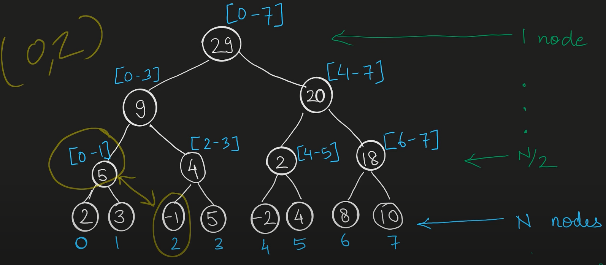
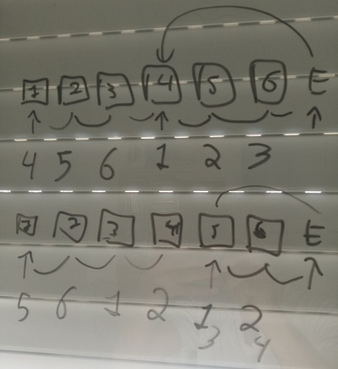

# Empanadas Argentinas
Caloni, 2023-04-04 <food> <cooking> <repost> [up] [copy]Se for usar recheio de carne moída, para a quantidade pesada de carne pesar o mesmo de farinha de trigo; você pode usar esta base para outros tipos de recheio, se atentando ao volume que o recheio gera, que é o que deverá ser embrulhado pela empanada. Nos meus testes 100g de farinha conseguem embrulhar 3 ou 4 empanadas. Com base no peso da farinha, usar 2% de sal, de 25% a 50% de gordura em temperatura ambiente, tradicionalmente banha, mas pode ser usado manteiga ou outro tipo de óleo, e de 35% a 40% (ou bem pouco a mais, apenas para umedecer) de água morninha, mas que não queima a mão. Antes de ir para o forno reserve um ovo misturado com um pouco de água para pincelar por cima. Algumas receitas vão um ovo na massa também, para a elasticidade.
O recheio que mais uso vai basicamente a carne, moída ou em pedaços, e cebola, picada ou fatiada, ambos com o mesmo volume. Uma versão saltenha da mesma receita pode ser feita com batata cozida, mas ainda firme, em pequenos pedaços. Uma outra versão usa ovos cozidos em pedaços. E, por fim, é comum também usar uvas passas, o que pode ir bem para paladares mais exóticos. Fora esses padrões há infinitas possibilidades de recheio, e todas serão empanadas, do espanhol "embrulhado em massa de pão".
Um último recheio que usei e que ficou top foi um mix de linguiças apimentada e calabresa com cebola e azeitonas. Não precisou de mais nenhum tempero.
Dissolva o sal na água, aqueça até amornar. Curiosidade: tradicionalmente usa-se sal grosso, mas na prática tanto faz, uma vez que ele será dissolvido. Jogue esta salmora ainda morna por cima da farinha aos poucos para não gerar grunhas e vá misturando até umedecer toda a massa; se faltar um pouco de água coloque mais um pinguinhos, a ideia é umedecer apenas. Em seguida, adiciona a gordura, também misturando bem; não precisa sovar, mas misture até deixar uma massa homogênea. Deixe por uns 10 minutos em temperatura ambiente para a massa relaxar e embale em plástico filme ou coloque em um pote hermético dentro da geladeira por pelo menos uma hora e até de um dia para o outro.
Há várias formas de preparo, variando se a base será a carne ou a cebola. Você pode dourar a carne em uma panela com banha ou qualquer tipo de gordura com até 10% do peso, reduzindo o líquido e deixando queimar levemente enquanto joga água quente para não grudar no fundo. Você pode também jogar água quente na carne em uma peneira, o que a cozinha levemente apenas na superfície, e na panela amolecer a cebola com a gordura. De qualquer forma, o que estiver no fogo é para temperar. Além de sal e pimenta a gosto, os temperos tradicionais são cominho e páprica doce. Quando a base estiver temperada e no ponto pode misturar a outra parte (cebola ou carne). Se quiser ao final pode jogar um pouco de tomate picado ou seu molho de preferência. Reduza o líquido, desligue o fogo para colocar os temperos frágeis (os que preferir): orégano, salsa picada, azeitona em pedaços. Pode manter na geladeira por pelo menos uma hora ou de um dia para outro. Se quiser adicionar batatas, estas são cozidas em cubinhos e se mantém firmes embora moles, e ovos cozidos são picados após frios. Ambos são colocados tradicionalmente em cima da carne, sem misturar. A ideia é não alterar a cor desses ingredientes com a carne.
Ao retirar a massa cada pedaço deve ser alongado em mais ou menos um palmo com um rolo. Tire um punhado da massa, faça uma bola, jogue em uma mesa ou bancada, dê uma amassadinhas com o rolo e vá alongando para manter um círculo. Os círculos podem voltar à geladeira para manter o formato e ser mais fácil de manusear antes de rechear, mas não é necessário, especialmente se estiver trabalhando em equipe (um abre a massa e o outro recheia e fecha).
Para rechear pega-se de uma a duas colheres médias do recheio e coloca-se no meio do círculo. Se estiver com a massa na mão abrace o recheio e sele em volta, começando pela parte de cima e depois as beiradas, encostando as beiradas, com uma margem de cerca de um ou dois dedos. Depois que estiver grudada a massa pode-se fazer aquele arranjo característico das empanadas, de fazer as orelhas progressivas do começo ao fim. Isso se faz com dois dedos e um terceiro de guia. É mais simples praticando.
Para assar o forno deve estar no seu calor máximo. Unta-se em cima das empanadas com um ovo quebrado e um pouco de água para dourar quando estiver pronto. Algumas receitas usam inclusive um pouco de açúcar cristal para dourar um pouco mais. Em cerca de meia-hora no forno as empanadas devem estar prontas. É possível deixar assada parcialmente para guardar no freezer e voltar ao fogo quando quiser terminar para comer.
Faltou massa da última vez, então experimentei novas proporções: 40% de água, 40% de gordura. No entanto criei grunhas na farinha ao jogar a água um pouco quente demais de uma vez na massa, e deve ser por isso que lá no início da receita é pedido que se coloque aos poucos. Há a opção de juntar com a gordura também, mas ainda prefiro testar novamente umedecer a farinha para depois acrescentar a gordura.
O resultado dessa história é que tive que colocar mais água porque 40% não foi o suficiente para umedecer (colocando a aos poucos talvez funcione) e depois coloquei mais farinha, pois o resultado estava mole demais.
Outro ponto de mudança é dar um tempo para a massa em temperatura ambiente antes de congelar para que ela relaxe. Uns 10 minutos devem bastar, mas estou seguindo o que sei sobre massa.
Acertei a massa da empanada. Pode ter sido o uso de manteiga porque acabou a banha. Pode ter sido a estreia da minha pedra de forno. Tomara que seja essa última. A massa não ficou seca como costuma ficar. Ela quebrou internamente em duas camadas, como costumo observar nas argentinas. Ela manteve o recheio mais úmido.
Acho que é possível colocar mais banha durante o preparo do recheio e menos água; 50% ficou muito; vou diminuir para 40%; no entanto, o resultado ficou menos seco. O mesmo peso de cebola na carne é demais porque depois a água da carne é reduzida. Creio que a instrução deva ser por volume nesse caso, porque aí depende do recheio já reduzido. Para a empanada clássica o tempero enquanto cozinha é basicamente sal, pimenta e cominho. Hoje experimentei com pimenta vermelha coreana e deu um sabor a mais (é possível variar). Depois de cozido o tempero é basicamente verde: azeitonas, salsa.
Outra anotação foi o mix de linguiça apimentada e calabreza que fiz, junto de cebolas para suavizar e azeitonas. Ficou muito, muito bom. Anotado mais um recheio.
Uma última anotação, importante como sempre: a massa mais uma vez não deu. Pode ter sido a umidade da massa que não permitiu colocar mais recheio, mas vou voltar a receita para 100% do recheio em carne de farinha, o que com 40% de gordura deve chegar mais próximo do 0 a 0.
Usando 60% do peso da carne de farinha ainda faltou massa para cerca de 4 empanadas. Considerando que foram feitas 26 o aumento deve ser de 10 a 20%. Vamos de 70% na próxima. Para a gordura foi usado 40%. O resultado ficou gorduroso como uma empada, mas não muito pesado. Ficou menos seco. Parece um ponto ideal para tentar colocar mais água, uns 40%, para ver se retém a umidade. Nessa noite tive insônia e acabei achando o vídeo de empanadas do cara do Amo Pão Caseiro onde ele usa o mesmo **peso** de cebola e carne e o mesmo peso de farinha e carne (mas vai batata e uva passa a mais). Achei simples e posso testar na próxima. Outras diferenças na proporção: 20% de banha de porco, 48% de água. No recheio 10% do peso da carne em banha de porco. Uma dica interessante dos comentários é que alguém usou um ovo para a massa, o que deu mais elasticidade. E eu vi um outro vídeo na mesma noite de algum argentino usando ovo também. Vale a pena o experimento. E, por fim: não precisa sovar a massa, só misturar e guardar na geladeira.
Dessa vez, no calor de 27 graus, usei 30% de água e achei pouco. Acredito que 35% seja o valor. Estou usando também 30% de gordura... ops, não. Medi errado. Foram 26% de gordura. Resolvi adotar a estratégia de metade do peso da carne em farinha. Na hora de montar sobrou bem pouco de carne, o suficiente para mais duas ou no máximo três empanadas. Isso quer dizer que a proporção que usei de metade do peso da carne em farinha estava bem próximo. Considerar na próxima 60% do peso da carne em farinha.
Usando a proporção de 25% de gordura e 30% de água com sova mediana seguido de descanso na geladeira. A massa ficou ligeiramente seca e quebradiça, mas fácil de manusear e não abriu. Talvez dê para colocar mais gordura?
Fiz mais massa, ainda tentando acertar a proporção, pesando a água de duas xícaras e entendendo quanto é isso para 1kg de farinha. É pouco. Que eu me lembro é 35% ou menos. Usei próximo a mesma quantidade de gordura, que está bem acima do que costumo usar. A massa ficou mais gordurosa, dá para sentir, mas nada exagerado, nem pesado. Talvez um pouco menos na próxima fosse melhor. Preciso voltar a medir para conseguir os números na próxima vez.
Assisti um vídeo da argentina do La Guapa ensinando alguns truques sobre empanadas, além da história de cada versão (como por exemplo são usadas uvas passas na versão mendocina porque é o que há de mais abundante na região). Uma dica é sobre a gordura na massa e no recheio, que nunca é demais. Na massa dá mais crocância e pode ser usada até na proporção de 50%. No recheio o objetivo é um caldo que depois que gela não fica líquido e apenas derrete depois que você abre após assado (e torna o recheio mais úmido).
Sobre as métricas da empanada. Sobrou carne e faltou massa para a relação de 40% (400g de farinha para quase 1kg de carne). Sobre o volume de cebola, deixei próximo do de carne, mas levemente abaixo. O sabor não ficou tão doce, o equilíbrio foi bom.
A Mitiko pediu empanadas para hoje e aproveitei para iniciar algumas medições para quantidades baseadas em gramas em vez de volumes. Para o primeiro teste eu escolhi usar 10% de banha para 400g de farinha, água morna até trazer maciez durante a sova (sem medir por enquanto), elasticidade sem desenvolver completamente o glúten e geladeira enrolado em plástico filme. O resultado não foi bom, a massa ficou molenga demais, e eu atribuo tanto ao excesso de umidade quanto à pouca gordura. Para meu próximo teste irei tentar 20% de gordura e uma quantidade menor de água. Como a receita original pede 2 xícaras (chá) de água morna para 1kg de farinha irei pesar as xícaras que costumo usar e tirar a porcentagem. A sova continuará a mesma; por enquanto o objetivo é analisar a consistência.
Usei banha de porco dessa vez na empanada, deixei descansar a massa no pano para o dia seguinte e o recheio também, deixando levemente molhado. O resultado ficou uma massa menos seca e com aqueles sinais de queimadinho pontuais. O recheio foi com acém moído e caldo de carne natural.
Empanadas com a minha receita de massa, mas com farinha de trigo italiana tipo 00 para massa fresca. O resultado após uma hora na geladeira dentro da tigela coberta com pano ficou mais difícil de quebrar (muito difícil), mas difícil de dobrar para fechar também. Porém, não abriu nenhuma, mas continuou seca como a última, quase uma mistura de pão e biscoito. Talvez um pouco mais de água (ou gordura) e o processo de embrulhar no papel filme. Usando banha de porco.
# Instalei um contador de visitas
Caloni, 2023-04-04 [up] [copy]Estou revisando como fazer para estar no Flow durante leisure time e uma das poucas regras necessárias é que você precisa coletar feedback sobre como está indo na atividade. No caso da escrita achei difícil eu mesmo ser o responsável por esse feedback, principalmente por não estar sendo no momento um leitor assíduo. Então minha primeira ideia foi saber se pessoas estão lendo meus posts, aproveitando o fato deles serem públicos.
Para minha surpresa hoje me deparo, além das minhas próprias visitas, alguém lendo sobre a sorveteria Banana da Terra em Morretes. Com certeza não sou eu, já que o dispositivo é um MacOS e dos EUA. Outro acesso tinha relação com o vcpkg.
Não sei bem se esse é um analytics com histórico ou são os acessos de tempo real. De qualquer forma agora já sei de pelo menos alguém que está acessando o blogue. Isso é um feedback válido? Deixe o que acha nos comentários.
Ops, não há comentários no blogue. Não dá para aguentar tanto feedback da humanidade.
# Timemore C2
Caloni, 2023-04-05 <food> <coffee> [up] [copy]Chegou meu segundo moedor manual depois do quebra-galho que foi o Hario Slim por mais de dois anos. Depois de muito pesquisar fiquei muito satisfeito em comprar este modelo da Timemore, por três motivos.
Para começar o custo/benefício é imbatível. Há muitos moedores manuais hoje em dia, mas nenhum entrega tanta qualidade com tão poucos moluscos. No caso da Timemore a construção de seu moedor de entrada é barateado por conta de algumas partes feitas em plástico reforçado, mas ainda assim a engenharia por trás do mecanismo criado por eles impressiona por não ser um top de linha. A sensação ao segurar um moedor desse é que ele parece mais caro.
Depois do custo o que mais me conquistou com certeza foi sua velocidade e comodidade. Estou acostumado a gastar cerca de três minutos todos os dias para moer meu café no Hario Slim, e isso sabendo que havia várias opções mais rápidas no mercado. Agora eu me sinto mais zen e privilegiado em conseguir colocar minha água para esquentar e apenas depois começar a pesar os grãos e moê-los, pois eu sei que o máximo de tempo que irei gastar são 40 segundos (isso moendo para Aeropress). Eu gostaria de dizer que não tem preço para isso, mas na verdade tem. Olhe o item anterior =)
Por fim, e apesar de já ter tocado no assunto de qualidade, acredito que o conjunto deste motivo final poderia ser chamado de versatilidade. Isso porque a fabricação do moedor permite futuros upgrades das mós, além de sua suposta longevidade (e rapidez, claro) me permitir relaxar por mais que dois anos dessa vez. Enquanto não me aventuro no espresso, o único ponto fraco deste moedor de acordo com os reviews, posso com alegria explorar muitas opções de moagem e de extração dessa bebida gloriosa de todas as manhãs.
Recomendo a leitura do artigo "X64 Deep Dive" para se habituar às idiossincrasias sobre o formato assembly do x64, especialmente se você costuma depurar assembly para Windows. O artigo descreve as novas funcionalidades que suportam os 64 bits do formato do executável Windows, o Portable Executable, além de explicar em detalhes o funcionamento de mecanismos que mudaram, como o tratamento de exceção (e o unwinding no código).
Criei um repositório para praticar alguns desses assuntos e recriar algum código-fonte para mostrar como o Visual Studio gera código em x64 e como depurar este código. Através deste repo e do vídeo que pretendo gravar a respeito caminharemos pelas mudanças desde o x86 para aumentarmos nossas habilidades em debugging de código x64. Entre algumas mudanças segue uma lista do que considerei mais importante:
/*
"Fastcall registers are used to pass parameters to functions. Fastcall is the
default calling convention on X64 where in the first 4 parameters are passed via
the registers RCX, RDX, R8, R9." - X64 Deep Dive
int TestFastCall() {
push rdi
sub rsp,30h # RBP is no longer used as frame pointer.
int res = FastCallTest(1, 2, 3, 4);
mov r9d,4
mov r8d,3
mov edx,2
mov ecx,1
call FastCall
mov dword ptr [res],eax
return res;
mov eax,dword ptr [res]
}
add rsp,30h # RBP is no longer used as frame pointer.
pop rdi
ret
*/
/*
"X64 compiler can optimize the last call made from a function by replacing it
with a jump to the callee. This avoids the overhead of setting up the stack
frame for the callee." - x64 Deep Dive
# TailCall3
return a + b;
lea eax,[rcx+rdx]
}
ret
# TestTailCallElimination
TailCall1(1);
TailCall2(2);
return TailCall3(1, 2);
mov edx,2
lea ecx,[rdx-1]
jmp TailCall3
*/
/*
"Unlike the X86 CPU where the EBP register is used to access parameters and
local variables on the stack, X64 functions do not make use of the RBP register
for this purpose i.e. do not use the EBP register as a
frame pointer." - x64 Deep Dive
# Win32 (x86)
int TestFramePointerOmission() {
return 1;
00601593 mov eax,1
}
00601599 ret
# Win62 (x64)
int TestFramePointerOmission() {
return 1;
00007FF7D6E215E2 mov eax,1
}
00007FF7D6E215E8 ret
*/
/*
Since RSP is used to reference both parameters and local variables in x64,
the side effect and feature of x64 function is that RSP does not change
thru all its body, changing only in prolog (begin) and epilog (end) parts
of the function.
# Win32
int RSPIsTheSame(int p1, int p2, int p3, int p4, int p5, int p6, int p7, int p8) {
# prolog-begin
push ebp
mov ebp,esp
# prolog-end
RSPIsTheSameCall1(p1);
mov eax,dword ptr [p1]
push eax # RSP--
call RSPIsTheSameCall1
add esp,4 # RSP++
RSPIsTheSameCall4(p1, p2, p3, p4);
mov ecx,dword ptr [p4]
push ecx # RSP--
mov edx,dword ptr [p3]
push edx # RSP--
mov eax,dword ptr [p2]
...
call RSPIsTheSameCall4
add esp,10h # RSP++
RSPIsTheSameCall8(p1, p2, p3, p4, p5, p6, p7, p8);
mov edx,dword ptr [p8]
push edx # RSP--
...
call RSPIsTheSameCall8
add esp,20h # RSP++
return 1;
mov eax,1
}
# epilog-begin
pop ebp
# epilog-end
ret
# Win64
int RSPIsTheSame(int p1, int p2, int p3, int p4, int p5, int p6, int p7, int p8) {
# prolog-begin
mov dword ptr [rsp+20h],r9d
mov dword ptr [rsp+18h],r8d
mov dword ptr [rsp+10h],edx
mov dword ptr [rsp+8],ecx
push rdi
sub rsp,40h # RSP last change
# prolog-end
RSPIsTheSameCall1(p1);
mov ecx,dword ptr [p1]
call RSPIsTheSameCall1
RSPIsTheSameCall4(p1, p2, p3, p4);
mov r9d,dword ptr [p4]
...
call RSPIsTheSameCall4
RSPIsTheSameCall8(p1, p2, p3, p4, p5, p6, p7, p8);
mov eax,dword ptr [p8]
mov dword ptr [rsp+38h],eax
...
call RSPIsTheSameCall8
return 1;
mov eax,1
}
# epilog-begin
add rsp,40h # RSP restore
pop rdi
# epilog-end
ret
*/
/*
"(...) homing space and is used to store parameter values if either the function
accesses the parameters by address instead of by value or if the function is
compiled with the /homeparams flag. The minimum size of this homing space is
0x20 bytes or four 64-bit slots, even if the function takes less than 4
parameters. When the homing space is not used to store parameter values, the
compiler uses it to save non-volatile registers." - x64 Deep Dive
"The register based parameter homing space exists only for non-leaf
functions." - x64 Deep Dive
# Win64 Debug
int HomingSpaceNonLeaf(int p1, int p2, int p3, int p4) {
mov dword ptr [rsp+20h],r9d # homing space saving params
mov dword ptr [rsp+18h],r8d
mov dword ptr [rsp+10h],edx
mov dword ptr [rsp+8],ecx
push rdi
sub rsp,20h
# Win64 Release
int TestHomingSpaceNonLeaf() {
sub rsp,28h
int ret = HomingSpaceNonLeaf(1, 2, 3, 4);
mov edx,2 # even begin non-leaf function, params are not saved in release
lea r9d,[rdx+2]
lea r8d,[rdx+1]
lea ecx,[rdx-1]
call HomingSpaceNonLeaf
*/
/*
"The value of the Child-SP register displayed by the debugger's "k" command
represents the address at which the stack pointer (RSP) points to, as the point
where the function displayed in that frame, has finished executing its prolog.
The next item that would be pushed on the stack would be the return address of
the function as it invokes its callees. Since X64 functions do not modify the
value of RSP after the function prolog, any stack accesses performed by the rest
of the function are done relative to this position of the stack pointer. This
includes access to stack based parameters and local variables." - x64 Deep Dive
*/
# Win64 Debug
p5 = i + j + (i % 2 ? p1 : p2) + (j % 2 ? p3 : p4);
mov eax,dword ptr [rsp+0Ch]
cdq
and eax,1
xor eax,edx
sub eax,edx
test eax,eax
je ChildSPF3+0BBh
mov rax,qword ptr [p1]
mov eax,dword ptr [rax]
mov dword ptr [rsp+14h],eax # reference child-sp
jmp ChildSPF3+0C6h
mov rax,qword ptr [p2]
mov eax,dword ptr [rax]
mov dword ptr [rsp+14h],eax # reference child-sp
mov eax,dword ptr [rsp+10h] # reference child-sp
cdq
and eax,1
xor eax,edx
sub eax,edx
test eax,eax
je ChildSPF3+0E3h
mov rax,qword ptr [p3]
mov eax,dword ptr [rax]
mov dword ptr [rsp+18h],eax # reference child-sp
jmp ChildSPF3+0EEh
mov rax,qword ptr [p4]
mov eax,dword ptr [rax]
mov dword ptr [rsp+18h],eax # reference child-sp
mov eax,dword ptr [rsp+10h] # reference child-sp
mov ecx,dword ptr [rsp+0Ch] # reference child-sp
add ecx,eax
mov eax,ecx
add eax,dword ptr [rsp+14h] # reference child-sp
add eax,dword ptr [rsp+18h] # reference child-sp
mov rcx,qword ptr [p5]
mov dword ptr [rcx],eax
/*
"(...) as execution progresses within the function body, the contents of the
parameter registers change and the initial parameter value gets overwritten. So,
to determine the value of these register based parameters at any point during
function execution, one needs to find out - where is the value of the parameter
being read from and where is the value of the parameter being written to?
Answers to these questions can be found by performing a sequence of steps in the
debugger which can be grouped as follows: Determine if the parameters are loaded
into the registers from memory. If so, the memory location can be examined to
determine the parameter values. Determine if the parameters are loaded from
non-volatile registers and if those registers are saved by the callee. If so,
the saved non-volatile register values can be examined to determine the
parameter values. Determine if the parameters are saved from the registers into
memory. If so, the memory location can be examined to determine the parameter
values. Determine if the parameters are saved into non-volatile registers and if
those registers are saved by the callee. If so, the saved non-volatile register
values can be examined to determine the parameter values." - x64 Deep Dive
# Win64 Release
1. Parameters are loaded into the registers from memory.
mov dword ptr [rbp+30h],5 # p5 = 5
mov dword ptr [rbp+28h],6 # p6 = 6
mov dword ptr [rbp+20h],7 # p7 = 7
mov dword ptr [rbp+18h],8 # p8 = 8
call ChildSPF1
2. Parameters are loaded from non-volatile registers and those registers
are saved by the callee.
int oldP7 = *g_ParameterRetrieval_p7_retrieval;
return p1 + p2 + p3 + p4 + p5 + p6 + oldP7 + p8;
mov eax,dword ptr [rdx]
mov r10,rcx
add eax,dword ptr [r8]
add eax,dword ptr [r9]
mov rdx,qword ptr [p5]
mov rcx,qword ptr [g_ParameterRetrieval_p7_retrieval]
3. Parameters are saved from the registers into memory.
# Win64 Release
g_ParameterRetrieval_p7_retrieval = &p7;
mov r10,qword ptr [p7]
mov r11,rcx
return p1 + p2 + p3 + p4 + p5 + p6 + p7 + p8;
mov rcx,qword ptr [p8]
mov qword ptr [g_ParameterRetrieval_p7_retrieval],r10 # save nonvolatile register
4. Parameters are saved into non-volatile registers and those registers
are saved by the callee.
# Win64 Release
int ParameterRetrieval3(int& p1, int& p2, int& p3, int& p4, int& p5, int& p6, int& p7, int& p8) {
mov qword ptr [rsp+8],rbx
mov qword ptr [rsp+10h],rsi
mov qword ptr [rsp+18h],rdi
mov qword ptr [rsp+20h],r14
push r15 # saves what will be p7
int oldP7 = p7;
for (int i = 0; i < 7; ++i) {
p7 += p1;
mov r10d,dword ptr [rcx]
mov r14,rcx
mov r15,qword ptr [p7] # going to use p7
mov rbx,rdx
mov rdi,r9
mov esi,dword ptr [r15] # Parameters are saved into non-volatile registers...
add r10d,esi
...
}
int ret = p1 + p2 + p3 + p4 + p5 + p6 + p7 + p8;
...
p7 = oldP7;
return ret;
}
...
mov dword ptr [r15],esi # ... and those registers are saved by the callee.
mov rsi,qword ptr [rsp+18h]
pop r15
ret
*/
On X64, the first 4 parameters are always passed in registers and the rest of the parameters are passed via the stack. This is one of main causes of grief during debugging since register values tend to change as functions execute and it becomes difficult to determine the original parameter values that were passed to a function, half-way into its execution. Other than this one issue with retrieving parameters, x64 debugging is not that different from x86 debugging.
Unfortunately, there is no silver bullet to finding parameters. All the techniques here depend heavily on the X64 assembler instructions generated by the compiler. If the parameters are not in "reachable memory", there is simply no way to get them. Having private symbols for modules and functions that appear in the call stack doesn't help too much either. Private symbols do tell the number and types of parameters a function takes, but that's about it. It does not tell what those parameter values are.
Determine if the parameters are loaded from non-volatile registers and if those registers are saved by the callee.
Determine if the parameters are saved from the registers into memory.
Determine if the parameters are saved into non-volatile registers and if those registers are saved by the callee.
Each one of the techniques requires disassembling the caller and the callee functions involved in the parameter passing.
The debugger's ".frame /r" command displays the values of non-volatile registers when a particular function was executing.
it is important to always verify parameter register overwrites
It is important to examine the instructions up to the call to the next function (...) to ascertain that these non-volatile registers are not being overwritten.
# Cracking the code interview
Caloni, 2023-04-07 <books> [up] [copy]Este livro foi recomendado pela minha amiga para treinar para as entrevistas técnicas que ando fazendo. Escolhi ler este em seguida após terminar o Algorithm For Dummies. As primeiras anotações são como compor o CV e qual a estratégia de cada big tech nos seus processos. Escapei esta parte, não estou interessado em trabalhar em um Google da vida. Porém, há alguns detalhes que achei relevante recortar.
Estava em cerca de 8% do livro e desisti. Suas dicas são deveras avançadas para quem está apenas querendo tirar a ferrugem de algoritmos. Iniciei um outro chamado A Common-Sense Guide to Data Structures que parece mais a minha cara.
False negatives are acceptable. This is sad (and frustrating for candidates), but true. From the company's perspective, it's actually acceptable that some good candidates are rejected. The company is out to build a great set of employees. They can accept that they miss out on some good people.
(...)
They're far more concerned with false positives: people who do well in an interview but are not in fact very good.
Could you learn it as needed? Sure. But it's very difficult to know that you should use a binary search tree if you don't know of its existence. And if you do know of its existence, then you pretty much know the basics.
Whiteboards also tend to encourage candidates to speak more and explain their thought process. When a candidate is given a computer, their communication drops substantially.
If you are thinking right now that you have too much experience and can't fit it all on one or two pages, trust me, you can. Long resumes are not a reflection of having tons of experience; they're a reflection of not understanding how to prioritize content.
(...)
For each role, try to discuss your accomplishments with the following approach: "Accomplished X by implementing Y which led to z". Here's an example:
- Reduced object rendering time by 75% by implementing distributed caching, leading to a 10% reduction in log-in time.
Here's another example with an alternate wording:
- Increased average match accuracy from 1.2 to 1.5 by implementing a new comparison algorithm based on windiff.
Which one is faster? The first one does one for loop and the other one does two for loops. But then, the first solution has two lines of code per for loop rather than one. If you're going to count the number of instructions, then you'd have to go to the assembly level and take into account that multiplication requires more instructions than addition, how the compiler would optimize something, and all sorts of other details. This would be horrendously complicated, so don't even start going down this road. Big O allows us to express how the runtime scales. We just need to accept that it doesn't mean that O(N) is always better than O(N2).
We already said that we drop constants. Therefore, 0( N2 + N2) would be O ( N2 ). If we don't care about that latter N2 term, why would we care about N? We don't. You should drop the non-dominant terms.
If your algorithm is in the form "do this, then, when you're all done, do that" then you add the runtimes. If your algorithm is in the form "do this for each time you do that" then you multiply the runtimes.
This is a good takeaway for you to have. When you see a problem where the number of elements in the problem space gets halved each time, that will likely be a 0( log N) runtime.
Rather than making assumptions, let's derive the runtime by walking through the code.
# Duas séries pretas e um filme preto... e branco
Caloni, 2023-04-09 <cinema> <movies> <cinema> <series> [up] [copy]Coisa neste poste: Alfaville (Alphaville), Swarm (Enxame), Todo Mundo Odeia o Chris.
Estou revendo esta série que estreou nos anos 2000, quando minha família adorava assistir na TV aberta pela nostalgia de épocas menos abastadas. A série se chama Todo Mundo Odeia o Chris, é baseada vagamente na infância do comediante Chris Rock vivendo no Brooklin dos anos 80. Muito é inventado e adaptado, mas a essência do que era viver nos subúrbios de Nova York em uma família proletariada negra se mantém.
Minha família se identificava e muito, mas não pela cor da pele, e sim por ser a história de uma família pobre, que tem que vender o almoço pra comprar a janta e se desdobrar para criar três filhos. É sobre pobreza. A pobreza nos une em torno das desgraças, que são o tempero da vida. Usamos das desgraças para dar risada uns dos outros e tornar a vida mais leve, exatamente o oposto de porta-bandeiras de movimentos sociais. Desgraça é o que os pobres têm de sobra. É a moeda social de troca de facto, e no Brasil é a maneira como as pessoas se promovem, através da exploração da compaixão alheia.
Esta é uma série lúdica para todos, inclusive crianças, que não apanham tanto quanto poderiam. Apesar de Chris receber várias ameaças nervosas de sua mãe, nós sabemos como isso funciona na cabeça de uma criança. É um sitcom charmoso, com algumas fachadas externas e cenários internos que nos remetem a uma época mais inocente da TV e da vida real. Sem celulares a TV das crianças era a atração principal, uma caixa de 19 polegadas com uma imagem sofrível em que se exercitava a imaginação. Ou seja, o paraíso. Uma das últimas décadas antes de tudo mudar.
Ainda sobre séries negras saiu no Prime uma produção de Donald Glover, o rapaz de Community. Ele dirige alguns episódios e escreve todos. É sobre assassinatos que aconteceram nos últimos anos que devem estar relacionados com uma garota que tem sérios problemas psicológicos. Ela faz parte de um culto online chamado Enxame, de fãs da Beyoncé, chamada na ficção de Ny'Ja e censurado seu nome no documentário sobre o caso real. Este grupo faz de tudo ao seu alcance para destruir na rede pessoas que criticam sua deusa. Essa garota faz o que sabe fazer de melhor: matar golpeando suas vítimas com toda a força. Ela usa objetos pesados como martelo e frigideira e não para enquanto não vê o sangue escorrendo pelo chão. O motivo: pessoas que falaram mal nas redes sociais sobre a cantora. Existe uma relação com uma irmã que acaba se matando, o que desencadeia toda a ação. Vários dos detalhes dos casos são reais e ao final temos um episódio documental sobre a investigação deste caso ainda em andamento que me faz pensar que a investigadora do caso seria uma ótima adição ao elenco e à história.
A série estabelece um clima tenso e reflexivo. Temas do momento como o feminismo são trazidos à tona mais como alvo do que como bandeira. Até o racismo nota-se um tom de revisionismo da última década. Por exemplo, apesar de matar geral e ser altamente suspeita, a garota passa despercebida principalmente porque não se pode mexer com os negros pós-BLM. Abre-se a questão de quais as armadilhas que a sociedade passará quando alguns privilegiados podem cometer crimes, por serem considerados desprivilegiados, e sequer serem investigados.
Para finalizar este post eis um filme em preto... e branco. Fui assistir ao filme do Godard. Está rolando algumas exibições na Cinemateca, gratuitas, porque o diretor se matou ano passado e com isso encerrou forçosamente sua cinematografia (graças a Deus). Alguns trabalhos "icônicos" estão em exibição e aproveitei para ver no cinema algumas obras que estão ou deveriam estar (deveriam?) no checklist de um crítico de cinema.
Um desses filmes é Alfaville, uma distopia futurista que possui detalhes orwelianos misturados com um ar de filme noir de investigação. Um agente visita a icônica cidade onde os humanos estão vivendo o paraíso coletivista, como formigas obedientes, e seguem uma voz desagradável do chefão, que dá comandos e analisa situações. É como uma inteligência artificial, um ChatGPT futurista, que apenas informa a conclusão sem pensar nos fatos. O governo autoritário, surpresa, é fascista, e eles matam quem chora e se apaixona, além de outras formas de evitar o uso da lógica. Palavras que constituem risco à estabilidade dessa sociedade aos poucos são eliminadas. Mulheres são catalogadas por nível de sedução, e é essa uma de suas principais funções. O cara se apega pela filha de um amigo que se perdeu nesse mundo. Ninguém pode culpá-lo, ela é uma belezinha. Mas para olhar para as pernas dela precisamos ficar ouvindo aquele blá blá blá filosófico de filme francês.
Alfaville possui três ou quatro falas e cenas poderosas espalhadas em um filme do Godard, onde tiroteios e perseguições parecem arquitetadas por uma criança de 10 anos. Tudo é proposital, claro. O diretor domina a linguagem cinematográfica e a subverte pelo bem de atacar a lógica burguesa, seja lá o que isso quer dizer. Não façamos perguntas demais.
Este não é um dos piores filmes do diretor. Também não é dos melhores. Até porque eles não existem, começo a desconfiar. De qualquer forma, é altamente assistível, como a maioria de seus "trabalhos". Mas esse tem um algo a mais. O filme imprime um universo tão coeso e intenso em seu discurso que acaba se tornando uma entidade à parte. Assim como Metrópolis, Alfaville vira um lugar palpável em nossa imaginação coletiva sobre os lugares visitáveis do cinema. Todos nos lembraremos da voz desagradável avisando quando uma sala está ocupada ou livre conforme andamos pelo corredor. Todos lembraremos (ou não) daqueles condenados na piscina, declamando poesia e sendo esfaqueados por garotas de biquíni.
Valeu a pena ter ido no cinema junto dos jovens tirando fotos da tela para sair bem nas redes sociais? Filmes do Godard são sempre uma experiência. Se são boas ou más experiências é irrelevante. Cinema de arte não deve ser julgado. Especialmente quando se está dormindo na sala.
# Como descobrir se uma string é mutuamente rotativa
Caloni, 2023-04-09 <computer> <interview> [up] [copy]Uma string mutuamente rotativa é uma string que se rotacionarmos para a direita ou para a esquerda, com os caracteres "indo parar" do outro lado, é comparável com a string original. Exemplos:
Há alguns passos simples e um código esperto que consegue verificar isso. Os passos são os seguinte:
Ficou confuso? Vai ficar mais simples ao ver a implementação em C++:
bool RotationMutually(string s1, string s2)
{
if (s1.size() != s2.size()) return false;
s1 += s1;
return s1.find(s2) != s1.npos;
}
# Como funciona o bubble sort
Caloni, 2023-04-09 <computer> <interview> [up] [copy]Uma das piores ordenações possíveis, mas uma das mais simples de entender, é a bubble sort. Ela é passada para estudantes de computação porque é um algoritmo possível de explicar sem entrar em muitos detalhes do seu funcionamento, e também porque seu funcionamento é intuitivo.
O objetivo do algoritmo é ordenar uma lista.
Para conseguir ordenar o algoritmo precisa comparar todos os elementos e trocar as posições dos elementos desordenados, um a um.
Como a lista é varrida de cabo a rabo os elementos na posição mais errada possível vão caminhando em direção à sua posição correta.
Ou seja, se o primeiro elemento estiver na última posição são feitas N-1 trocas, do último para o penúltimo, do penúltimo para o antepenúltimo e assim por diante, até que o loop que varre todos os elementos faça a última comparação, entre o primeiro e o segundo elemento.
Note que é necessário fazer o caminho reverso para mover um elemento que está em primeiro, mas que deveria estar em último.
Para isso o loop que percorre a lista inteira precisa primeiro garantir que todo o resto da lista está ordenado.
Para conseguir isso a cada passada do primeiro loop é feito outro loop com o resto da lista.
Isso é feito da seguinte forma em C++:
vector<int> BubbleSort(vector<int> array)
{
for (size_t i = 0; i < array.size(); ++i)
{
for (size_t j = 0; j < array.size() - 1 - i; ++j)
{
if (array[j] > array[j + 1])
{
swap(array[j], array[j + 1]);
}
}
}
return array;
}
Se você leu o código deve ter percebido que existe um pequeno truque na hora de estipular o final do loop mais interno: ele diminui do tamanho do array menos o que já foi percorrido do elemento do loop externo. Em outras palavras, quanto mais avançarmos para a frente com o índice do loop externo menos avançamos para o final do array.
Isso é feito porque sabemos que já foram feitas i comparações antes, o que quer dizer que os elementos na posição size-i já foram devidamente movidos para dentro do intervalo que será comparado na passada deste próximo loop interno.
Para sentir o passo a passo dessas iterações, observe como os elementos de uma lista completamente desordenada se comporta e até onde vão as comparações do loop interno e, o mais importante, por que ele não precisa ir mais além.
i = 0 6 5 4 3 2 1 j - - - - j 5 4 3 2 1 6 i = 1 5 4 3 2 1 6 j - - - j 4 3 2 1 5 6 i = 2 4 3 2 1 5 6 j - - j 3 2 1 4 5 6 i = 3 3 2 1 4 5 6 j - j 2 1 3 4 5 6 i = 4 2 1 3 4 5 6 j j 1 2 3 4 5 6
Parece um algoritmo rápido, mas isso acontece porque está escondido cada uma das comparações e trocas do loop interno. Por exemplo, no primeiro bloco acima foram feitas cinco comparações e cinco trocas (N-1).
A complexidade deste algoritmo é de O(n^2) comparações e O(n^2) trocas.
Ou seja, nada bom. Mas fácil de entender =)
# Como funciona o insertion sort
Caloni, 2023-04-09 <computer> <interview> [up] [copy]Entre os algoritmos de ordenação mais simples de se entender o insertion sort está na lista. E isso acontece porque ele é intuitivo. É mais ou menos como podemos fazer para ordenar um deck de cartas: pegamos item a item e vamos inserindo em um segundo deck, mas dessa vez observando onde cada carta deve ser inserida para que o deck final esteja ordenado.
Implementar isso em código segue o mesmo princípio, mas em vez de ter um segundo deck podemos dividir o deck, ou array, em dois: ordenado e não ordenado. Varremos o array desordenado e movemos cada elemento para a posição em que ele deve ficar no array ordenado.
Para dividir o array usamos um índice. Peguemos o segundo elemento, por exemplo. O primeiro elemento já está ordenado, pois está sozinho. A partir daí verificamos onde o segundo elemento será colocado: onde está ou antes do primeiro elemento. Decidido isso partimos para o terceiro elemento, onde fazemos a mesma comparação, primeiro com o primeiro ou segundo elemento, depois com o outro. Então fazemos a troca (ou não). E assim por diante. No final, quando estivermos comparando o último elemento, todo o deck ordenado estará completo.
Essa lógica computacional é boa de entender porque realiza uma mímica com a lógica humana, passo a passo. Imagine um ser humano pegando a terceira carta, comparando com a segunda, comparando com a primeira, dessa forma realizando a troca entre a primeira e a terceira, por exemplo.
A parte não intuitiva ou mais complexa é que para inserir um elemento que deveria estar na segunda posição, mas está na quinta, é necessário ir realizando a troca entre o quinto e quarto elementos, depois entre o terceiro e o quarto, até chegar na segunda posição. Isso se tratando de um array. Esse algoritmo pode funcionar mais rápido se utilizada uma lista ligada (menos trocas).
Em código C++ ficaria assim:
vector<int> InsertionSort(vector<int> array)
{
for (size_t i = 1; i < array.size(); ++i)
{
size_t j = i;
while ( j > 0 )
{
if (array[j-1] > array[j])
{
swap(array[j-1], array[j]);
}
--j;
}
}
return array;
}
# Como inverter uma lista ligada
Caloni, 2023-04-09 <computer> <interview> [up] [copy]Inverter uma string ou qualquer array em geral é muito simples se for pensar: itere do começo ao fim e do fim ao começo trocando as posições dos primeiros elementos com os últimos. Caminhe até a metade. Fim.
No entanto, para uma lista ligada a coisa não é tão intuitiva assim. É necessário um certo manejo e um certo entendimento de como uma lista é estruturada durante a troca de ponteiros.
O passo a passo parece simples:
Esse desafio tem seus truques. O importante na lógica abaixo é atravessar a lista mantendo o tracking dos elementos seguinte e anterior. Tendo o elemento atual, anterior e próximo a troca de posições se torna simples, mas não tão simples quanto você deve estar imaginando porque:
H -> 1 -> 2 -> 3 -> 4 -> 5 -> 0 1 -> 0 2 -> 1 -> 0 3 -> 2 -> 1 -> 0 4 -> 3 -> 2 -> 1 -> 0 5 -> 4 -> 3 -> 2 -> 1 -> 0 H -> 5 -> 4 -> 3 -> 2 -> 1 -> 0
Os passos numerados estão de acordo com o código C++ abaixo:
shared_ptr<LinkedList> LinkedListReverse(shared_ptr<LinkedList> head)
{
shared_ptr<LinkedList> present = head->next; // begin
shared_ptr<LinkedList> preceding = nullptr;
shared_ptr<LinkedList> following;
while (present != nullptr)
{
following = present->next; // 1
present->next = preceding; // 2
preceding = present; // 3
present = following; // 4
}
shared_ptr<LinkedList> rhead = make_shared<LinkedList>();
rhead->value = 0;
rhead->next = preceding;
return rhead;
}
# Como inverter uma string
Caloni, 2023-04-09 <computer> <interview> [up] [copy]O bom de estar praticando para fazer entrevistas técnicas é ter material para novos postes. E este poste é sobre um assunto bem simples para quem já sabe como funcionam strings, mas complexo o suficiente para quem nunca ouviu falar de memória no computador.
Vamos começar pela resposta. O algoritmo que deve ser seguido é:
Simples, não? Em C++:
string ReverseString(string s)
// string passada por parâmetro
{
size_t begin = 0; // posição inicial
size_t end = s.size() - 1; // posição final
while (begin < end) // enquanto não invertemos as posições
{
char buf = s[begin]; // troca elementos de posição
s[begin] = s[end];
s[end] = buf;
++begin; // atualize a posição inicial e final da string
--end;
}
return s; // string invertida
}
# Como pegar caracteres repetidos em uma string
Caloni, 2023-04-09 <computer> <interview> [up] [copy]A resposta rápida para esta questão é: hash tables.
Com hash tables você consegue através de uma chave agrupar qualquer tipo de informação. No caso de caracteres repetidos em uma string a chave é o próprio caractere. Os passos para conseguir isso são os seguintes:
Em C++ um código que faz isso seria como o abaixo:
void MatchingCharacters(string s)
{
map<char, int> m; // declarar um map entre char e int
for_each(s.begin(), s.end(), [&m] { m[c] += 1; }); // loop caractere a caractere incrementando contador para cada um
for( auto c: m ) {
cout << c.first << ": " << c.second << "\n";
}
}
# Onde fica o meio de uma lista ligada?
Caloni, 2023-04-09 <computer> <interview> [up] [copy]É simples descobrir o meio de um array: pegue seu tamanho e divida por dois. Agora, para uma lista ligada, mesmo que você saiba qual o índice do meio, não é por meio de índices que acessamos seus elementos, mas por ponteiros.
Nesse caso é necessário dar uma de esperto:
O princípio de contador de lista ligada é a contagem de iterações do começo até o final da lista, mas para manter o tracking de uma posição relativa como o meio dessa lista é necessário manter um segundo contador.
Através dessa mesma lógica você poderia encontrar posições arbitrárias no meio da lista, como o terceiro elemento onde seu valor começa com a letra 'p', etc.
Abaixo um código em C++ para não ficar tão abstrato:
shared_ptr<LinkedList> LinkedListTraverseToTheMiddle(shared_ptr<LinkedList>& head)
{
shared_ptr<LinkedList> next = head;
shared_ptr<LinkedList> nextDouble = head;
bool secondNext = true;
while (nextDouble->next)
{
if (secondNext)
{
next = next->next;
}
nextDouble = nextDouble->next;
secondNext = !secondNext;
}
return next;
}
# Métodos de extração de café e suas sutilezas
Caloni, 2023-04-09 [up] [copy]Comprei um Melitta e filtros de papel. O objetivo é usar como suporte para meu filtro de pano, mas aproveitei para voltar a praticar passar café como todas as pessoas fazem, mas também para degustar o resultado e entender se há alguma diferença com outros métodos que utilizo diariamente.
Posso estar enganado, mas a sensação geral para mim é que o resultado é cheio de sutilezas, mas nenhuma delas determinante. O mesmo café passado na prensa francesa possui corpo, textura e acidez bem presente. Feito na Aeropress no filtro de papel carece de acidez, mas apresenta um equilíbrio maior junto de uma certa doçura no final. Passado no pano revela notas mais ácidas junto de uma textura próxima da prensa, mas sem amargor.
Já o Melitta foi o primeiro método que trouxe um certo amargor para este café, além de um corpo que eu não sabia que poderia encontrar em filtros de papel. Interessante. Já valeu a pena gastar 10 reais neste conjuntinho. O filtro de papel é cerca do dobro do preço dos da Aeropress, o que faz sentido, pois a quantidade de papel é muito maior. O curioso nessa comparação de preços é que Melitta é um método usado pelas massas com um preço por filtro bem maior que Aeropress, um método mais elitizado e hipster, mas que acaba oferecendo um custo/benefício melhor em seus insumos. E isso porque nem falamos no filtro de metal.
Porém, o bom do mundo do café é que você sempre pode gastar mais. Mesmo em filtros de papel do tipo Melitta. Já ouviu falar na iniciativa Hario V60?
# Segundo maior número
Caloni, 2023-04-09 <computer> <interview> [up] [copy]Esta é uma das primeiras questões que peguei para praticar para entrevistas que é ligeiramente mais complicada do que parece, apesar de simples o suficiente para matar em alguns segundos. A questão: como determinar qual o segundo maior número de um array?
Note que não é o maior número, mas o segundo maior. O que parece fácil. O que está implícito e o candidato deve descobrir é que para saber o segundo maior é necessário manter o tracking do primeiro todo o tempo.
Sempre que precisar resolver problemas com segundos ou terceiros elementos você deve manter uma segunda ou terceira variável. A primeira variável mantém o maior elemento e a segunda variável o segundo maior elemento. Sempre que você encontrar algum elemento maior que esses dois você deve atualizá-los de acordo. Depois de varrer toda a lista a segunda variável irá conter o segundo maior número.
Em C++:
int SecondLargest(vector<int> array)
{
int first = max(array[0], array[1]);
int second = min(array[0], array[1]);
for (size_t i = 2; i < array.size(); ++i)
{
if (array[i] >= first)
{
second = first;
first = array[i];
}
else if( array[i] > second )
{
second = array[i];
}
}
return second;
}
# Como inverter um número
Caloni, 2023-04-11 <computer> <interview> [up] [copy]Existe uma solução para a inversão de um número que não é bonita, mas prática: transforme em string e inverta essa string.
int ReverseNumberStringVersion(int number)
{
string s = to_string(number);
size_t beg = 0, end = s.size() - 1;
while (beg < end)
{
char buf = s[beg];
s[beg] = s[end];
s[end] = buf;
++beg;
--end;
}
return stoi(s);
}
Contudo, a maneira bonita de se fazer isso é mantendo o domínio do problema na matemática. E dessa forma:
int ReverseNumberNumberVersion(int number)
{
int reversedNumber = 0;
while (number) {
reversedNumber *= 10;
int next = number % 10;
reversedNumber += next;
number /= 10;
}
return reversedNumber;
}
# Como verificar se um número é primo
Caloni, 2023-04-11 <computer> <interview> [up] [copy]Apesar de existir matemáticos ao redor do mundo tentando responder esta pergunta da maneira computacionalmente mais rápida possível, existe uma forma ingênua e eficiente para números baixos:
Note que a mesma lógica pode ser aplicada para obter os fatores de um número, seus divisores, etc.
O código em C++:
bool PrimeNumber(int number)
{
if (number == 2) return true;
for (int i = 2; i <= (number / 2); ++i)
{
if (number % i == 0)
{
return false;
}
}
return true;
}
# Código para Fibonacci
Caloni, 2023-04-11 <computer> <interview> [up] [copy]Zero e um são os primeiros números Fibonacci e todos os outros que se seguem são a soma dos dois números anteriores. Ou seja, para implementar isto em código basta:
Um codigozinho que imprime os cinco primeiros números para deixar mais claro:
void Fibonacci()
{
int num1 = 0, num2 = 1;
int total = 5;
cout << "fibonacci of first " << total << " elements\n";
for (int i = 0; i < total; ++i)
{
int result = num1 + num2;
cout << result << ' ';
num1 = num2, num2 = result;
}
cout << endl;
}
# Café com Canela
Caloni, 2023-04-12 <cinema> <movies> [up] [copy]Essa moça tem uma raba interessante e passa um café gostosinho. Eu sei que os idealizadores deste filme não esperam um comentário como esse de um projeto mergulhado em representatividade e diálogos fracos. Se você compartilha da visão da equipe por trás, então não leia este texto. Obrigado.
Este filme foi apresentado pela Petrobrás e ganhou o prêmio Petrobrás, o que já diz quase tudo sobre ele. Mas dê uma olhada nos títulos dos textos acadêmicos sobre o filme:
Os textos acima poderão lhe proporcionar diversas formas de xerocar a opinião diversa que existe na imprensa; tão diversa que um é a cópia de outro que é a cópia de outro que é a cópia...
Porém, se você está curioso para entender como perdeu duas horas de sua vida, talvez este texto esclareça um pouco. Compartilho do seu tédio, caro leitor.
Era uma vez um diretor que se achava muito criativo. Então ele pegou sua câmera e aproximou ao máximo da cara das pessoas. "Eu amo planos detalhe", ele diria se fosse entrevistado. A tela balança e você já não sabe se está assistindo um filme ou dentro de um bote salva vidas.
O elenco de amadores poderia ser divertido, mas está seguindo um roteiro triste, de quem não tem confiança em seu conteúdo e apela para trucagens no tempo para criar a atmosfera, ou pelo menos tentar, de um drama pela perda de um ente querido.
A mudança de razão de tela e fotografia do começo conta a história sobre a divisão do presente e passado. O passado está nas memórias dessa mulher que perdeu tudo quando perdeu o filho.
Do outro lado da ponte nós temos a rabuda, que é mulher, negra, independente, pobre e tem uma bike e uma receita de coxinha da família. Ela gosta de cuidar. Cuida de sua mãezinha, acamada.
Os pontos que Café com Canela tenta unir estão tão espaçados na narrativa que quando eles se juntam não é natural, mas fabricado. Como os personagens engraçadinhos que compõem a trupe de amigos da rabuda.
Lá pelo final você entende. A velha aprende a andar de bicicleta. E ela agora pode cruzar uma ponte e superar o passado traumático. Às vezes a única coisa que falta é uma canela no café para aquela energia extra.
Here I am doing interview exercise tests at Hacker Rank. I am trying to recap what I've been doing the last two months before going on. Let's see what I learned, starting with the Warm Up exercises.
To solve the counting valleys problem keep a valley counter that only increments when the hiker is coming up to the sea level. Monitor the altitude and the new altitude and compare. If the altitude was negative (into a valley) and the new altitude is zero (sea level) then that's a new valley to count. This strategy avoid to count valleys inside valleys before the hiker gets up to sea level.
This solution has a complexity of O(n).
int countingValleys(int steps, string path) {
int valleys = 0;
int altitude = 0;
for (int s = 0; s < steps; ++s)
{
int step = path[s] == 'D' ? -1 : 1;
int newAltitude = altitude + step;
if (altitude < 0 && newAltitude == 0)
{
valleys++;
}
altitude = newAltitude;
}
return valleys;
}
To solve the cloud jump problem create a loop and advance current position until finished. Try the double jump at first and ordinary jump else by incrementing position by 1 or 2 and incrementing jump counter. If in the end position just increment and get out of the loop. Return the jump counter.
This solution has a complexity of O(n).
int jumpingOnClouds(vector<int> c) {
int jumps = 0;
size_t i = 0;
while (i < c.size()) {
if (i < c.size() - 2 && c[i + 2] == 0) {
i += 2;
++jumps;
}
else if (i < c.size() - 1) {
i += 1;
++jumps;
}
else {
i += 1;
}
}
return jumps;
}
To solve the repeated string problem we count the 'a' occurrences for the full unique string and divide n by the size of the unique string size, getting the number of times we need to multiply the full occurrences.
For the partial string after the number of full unique strings we format this string and count independently this last part.
The total of occurrences is calculated multiplying the times there will be full unique strings and sum up the partial string 'a' occurrences.
This algorithm has a complexity of O(n) because we got to count every char.
long repeatedString(string s, long n) {
long fullOccur = (long) count(s.begin(), s.end(), 'a');
long fullMult = n / s.size();
string partialStr = s.substr(0, n % s.size());
long partialOccur = (long) count(partialStr.begin(), partialStr.end(), 'a');
return fullOccur * fullMult + partialOccur;
}
To solve the sales by match problem we traverse all the array of socks and keep inserting and deleting a set of colors. If the current color is not found in the set we insert it. If the current color is found we increase a pair counter and remove the color from the set. The next time the same color appears it will be inserted again waiting for its pair.
The complexity of this solution is O(N), since we have to traverse all array of socks.
int sockMerchant(int n, vector<int> ar)
{
int ret = 0;
set<int> colors;
for (int color : ar)
{
if (colors.find(color) != colors.end())
{
ret++;
colors.erase(color);
}
else
{
colors.insert(color);
}
}
return ret;
}
# Hunger (Fome de Sucesso)
Caloni, 2023-04-17 <cinema> <movies> [up] [copy]Esse filme tem várias boas ideias que quando juntas viram uma mistureba que se torna intragável. Pelo menos filmes, até onde eu sei, não dão indigestão. A história lida com a questão do status dos cozinheiros entre seus clientes ricos e famosos. Em uma época de Master Chef e programas de culinária dominando a timeline é curioso entender esse fascínio, inclusive das massas, por gente que cozinha difícil e dizem por aí que é delicioso.
O filme também aproveita o estereótipo de chefes de cozinha jogarem coisas em sua equipe quando fica nervoso e ser ultra exigente porque teve uma infância difícil e quer se vingar dos 1%.
Do outro lado do ringue temos uma moça que cuida do restaurante da família. Ela sai de fazer frituras para chefe profissional, entre vários outros detalhes que você vai perceber que não faz o menor sentido no mundo da alta gastronomia.
Tudo é um show de luzes que quer iluminar temas sociais referentes a comida, mas sua trama é simplista e episódica a ponto de já sabermos de antemão todo o desenrolar da história. Por exemplo, uma vez que a cozinheira sai das asas do seu tutor fica óbvio demais, além de artificial, que vai surgir um confronto direto entre eles. Há uma tentativa séria de ilustrar o filme com cenas impactantes, mas sem pano de fundo que a sustente elas são formas que o próprio chefe do filme tenta iludir seus clientes: com luzes e fumaça.
# Árvore de segmentos
Caloni, 2023-04-17 <computer> <interview> [up] [copy]Não existe sequer uma entrada em português sobre Segment Tree, uma árvore binária específica para guardar intervalos. E este acredito ser um assunto importante para testes de entrevista ou competições de programação porque ele é muito útil para alguns problemas. Vamos dar uma olhada em como ela funciona.
<https://youtu.be/Ic7OO3Uw6J0>
Em primeiro lugar, ela é uma árvore binária. No entanto, seus ramos representam intervalos. A raiz possui o intervalo inteiro (mínimo e máximo) e os ramos vão se dividindo em intervalos menores, até que as folhas indiquem apenas um elemento.
É importante notar que uma árvore de segmento é maior que simplesmente um array, mas diferente de um array, a árvore brilha quando precisamos somar intervalos. Como ela está estruturada de maneira que cada ramo contém a soma de seus galhos, para obter a maioria dos intervalos sua complexidade desce de O(N) para O(log N).
Dessa forma, podemos concluir que o espaço ocupado por uma árvore binária para implementar um segment tree completo deve ocupar por volta de `2*N-1`, o espaço para implementar uma árvore binária completa com N folhas.
No entanto, o tamanho para estocar uma segment tree não é esse, mas tipicamente `4*N`. O motivo disso é que nós precisamos de `2*next_power_of_two(N)-1` para garantir que as divisões da árvore todas vão estar representadas, mas como custa processamento descobrir qual a próxima potência de 2 que é maior que N uma aproximação válida é usar `4*N`.
Vamos observar a implementação de uma árvore de segmentos. A primeira coisa é alocar o espaço necessário em um vetor. Digamos que nossa árvore irá conter os intervalos de 1 a 1000 (inclusive).
vector<int> tree[4*1000];
Nossa árvore está pronta. =)
Vamos atualizar algum valor nela. Por exemplo, definir o valor 42 para o node 666:
void update(int node, int left, int right, int pos, int value, vector<int>& tree) {
if (left == right) {
tree[node] = value;
} else {
int nodeLeft = 2 * node;
int nodeRight = 2 * node + 1;
int middle = (left + right) / 2;
if (pos <= middle)
update(nodeLeft, left, middle, pos, value, tree);
else
update(nodeRight, middle+1, right, pos, value, tree);
tree[node] = tree[nodeLeft] + tree[nodeRight];
}
}
int main() {
vector<int> tree(4 * 1000);
update(1, 1, 999, 666, 42, tree);
}
Algumas informações relevantes sobre esses parâmetros:
Todos esses parâmetros existem porque a função update é recursiva e ela precisa passar a localização dentro do array no formato de um mapa para uma árvore binária. A busca também segue o mesmo princípio, de O(log N), ou seja, para encontrar a posição desejada (variável pos) a função irá seguir limitando o intervalo entre left e right até que ambos tenham o mesmo valor, situação em que estaremos em uma folha.
Depois da atualização vem a parte interessante: os ramos acima da folha são atualizados com a soma entre seus ramos esquerdo e direito, recursivamente. Isso quer dizer que o valor 42 irá ecoar por todos os ramos de cima até chegar na raiz, que também irá conter 42, já que este é o primeiro valor diferente de zero de toda a árvore.
Vamos definir mais alguns valores em outras posições para em seguida implementar a soma:
int main() {
vector<int> tree(4 * 1000);
update(1, 1, 999, 666, 42, tree);
update(1, 1, 999, 600, 58, tree);
update(1, 1, 999, 700, 45, tree);
update(1, 1, 999, 999, 55, tree);
}
Com isso a soma dos seguintes intervalos deve contar os seguintes totais:
Vamos implementar a função de soma e descobrir.
int sum(int node, int left, int right, int posLeft, int posRight, const vector<int>& tree) {
if (posLeft > posRight)
return 0;
if (posLeft == left && posRight == right)
return tree[node];
int nodeLeft = 2 * node;
int nodeRight = 2 * node + 1;
int middle = (left + right) / 2;
return sum(nodeLeft, left, middle, posLeft, min(posRight, middle), tree)
+ sum(nodeRight, middle + 1, right, max(posLeft, middle + 1), posRight, tree);
}
int main() {
vector<int> tree(4 * 1000);
update(1, 1, 999, 666, 42, tree);
update(1, 1, 999, 600, 58, tree);
update(1, 1, 999, 700, 45, tree);
update(1, 1, 999, 999, 55, tree);
vector<vector<int>> intervals = {
{666, 666}, {600, 700}, {600, 999},
{1, 999}, {1, 599} };
for (const vector<int>& i : intervals) {
int isum = sum(1, 1, 999, i[0], i[1], tree);
cout << "the interval [" << i[0] << "," << i[1]
<< "] has the value " << isum << endl;
}
}
Mais uma vez, existem muitos parâmetros porque a função é recursiva e precisa se localizar, e o princípio é o mesmo da função update, de usar as variáveis como um mapas para navegar por uma array.
Note que a única variável que de fato indexa o array é a variável node. Porém, qual vai ser o índice de node é determinado pelos cálculos que giram em torno de ir para a direita ou para a esquerda pela árvore. Se for pela esquerda o próximo índice é o índice em node vezes 2, pois existem node ramos no nível em que estamos, e se for pela direita o próximo índice é node vezes 2 mais um, que é o próximo após o ramo da esquerda.
Se ficou difícil de entender, lembre-se que a busca em uma árvore binária segue a mesma lógica daquele jogo de adivinhação, em que você chuta um número de X a Y e a pessoa que sabe qual o número irá dizer se o número é maior ou menor do que você chutou. Como você é muito esperto irá sempre dividir a faixa de onde está para acertar o número o mais rápido possível.
Por exemplo, vamos supor que você deve chutar qual número é de 1 a 100. O número é 64.
Entre 100 possíveis chutes foram feitos 6, ou cerca de log 100 chutes. Exatamente como é feita a busca na árvore binária, seja de segmentos ou não. Essa é a grande vantagem de usar o mapa para se localizar no array como uma árvore binária, pois a busca não será linear.
O fato da árvore ser de segmentos é apenas um detalhe que incorre em mantermos atualizados os nodes com a soma de todos os ramos abaixo, algo custoso a princípio, mas que na hora de obter a soma de intervalos faz valer a pena.
# Hash Table Giratória
Caloni, 2023-04-19 <computer> <interview> [up] [copy]Ainda estudando e praticando testes de entrevista me veio essa em que seja possível realizar somas para todas as chaves de uma hash table. Curioso, nunca tinha pensado nesta feature. Imagine que temos uma tabela de hash entre inteiros em que `{ 1: 8, 2: 9 }`. A chave corresponde ao hash.
| -5: | -4: | -3: | -2: | -1: | 0: | 1:8 | 2:9 | 3: | 4: | 5: |...
Então eu aplico um comando na tabela inteira adicionando o valor 2 às chaves, fazendo seus elementos irem parar duas posições à frente de onde estavam. A posição 1 vira 3 e a posição 2 vira 5, mantendo os mesmos valores.
| -5: | -4: | -3: | -2: | -1: | 0: | 1: | 2: | 3: | 4:8 | 5:9 |...
Em primeiro momento eu pensei em mover posições em um vetor para resolver esta questão, mas em seguida descobri que a mesma lógica pode ser aplicada a números negativos, o que deixou tudo muito confuso na minha cabeça.
Depois de pensar em uma caminhada cheguei à conclusão que não é necessário ficar movendo memória uma vez que as posições relativas se mantém. Com base nisso eu desenvolvi a lógica de apenas manter um referencial do início "real" da tabela, ou seja, qual valor deve ser adicionado para se chegar à posição real após os deslocamentos. Dessa forma a posição na memória dos elementos permanece a mesma, mas do ponto de vista de indexação eles estariam, no exemplo acima, duas posições à frente. Para isso eu colocaria meu indexador duas posições atrás.
| -5: | -4: | -3: | -2: | -1: | 0: | 1:8 | 2:9 | 3: | 4: | 5: |...
|
beg 1 2 3 4 5 ...
add_to_key 2
| -5: | -4: | -3: | -2: | -1: | 0: | 1:8 | 2:9 | 3: | 4: | 5: |...
|
beg 1 2 3 4 5 ...
Agora sempre que alguém referenciar a posição 0 ela estará em -2 e assim por diante. Como a posição dentro de um array não precisa ser alterada não me preocupei em atualizar as chaves, apenas os campos internos de uma hash table: sua chave e valor.
A implementação não ficou exatamente assim, pois arrays não possuem índices negativos em C++. Para implementar eu já iniciei meu contador de início na metade do array, permitindo índices positivos e negativos na faixa de 100 elementos para cada lado.
struct HashTable {
typedef vector<vector<int>> BufferType;
HashTable(int tableSize) {
this->tableSize = tableSize;
bufferRaw = new BufferType[tableSize];
buffer = shared_ptr<BufferType>(bufferRaw, default_delete<BufferType[]>());
currentPosition = tableSize / 2; // for positive and negative room
}
BufferType& operator [] (int position) {
int actualPosition = (currentPosition + position) % tableSize;
return buffer.get()[actualPosition];
}
int tableSize;
shared_ptr<BufferType> buffer;
vector<vector<int>>* bufferRaw;
int currentPosition;
};
int HashFunction(int key, int tableSize) {
return key % tableSize;
}
vector<int>* FindItem(HashTable& hashTable, int key) {
for (vector<int>& items : hashTable[HashFunction(key, hashTable.tableSize)]) {
if (items[0] == key) {
return &items;
}
}
return nullptr;
}
Uma parte importante no código acima é entender que a hash function apenas pega o resto da divisão do tamanho da tabela. Porém, o método de subscrito da tabela considera onde ela começa, o `currentPosition`, que pode ser em qualquer lugar, dependendo das movimentações do usuário.
int actualPosition = (currentPosition + position) % tableSize;
O código que realiza as operações de fato apenas busca ou modifica valores:
vector<int> TestCase(vector<string> operations, vector<vector<int>> operands) {
HashTable hashTable(DEFAULT_HASH_TABLE_SIZE);
vector<int> results;
for( int i = 0; i < operations.size(); ++i ) {
if (operations[i] == "get") {
if (auto* item = FindItem(hashTable, operands[i][0]))
results.push_back((*item)[1]);
}
else if (operations[i] == "insert") {
if (auto* item = FindItem(hashTable, operands[i][0]))
(*item)[1] = operands[i][1];
else
hashTable[HashFunction(operands[i][0], hashTable.tableSize)].push_back(operands[i]);
}
else if (operations[i] == "add_to_values") {
for (int j = 0; j < hashTable.tableSize; ++j)
for (auto& item : hashTable[j])
item[1] += operands[i][0];
}
else if (operations[i] == "add_to_keys") {
for (int j = 0; j < hashTable.tableSize; ++j)
for (auto& item : hashTable[j])
item[0] += operands[i][0];
hashTable.currentPosition -= operands[i][0];
}
}
return results;
}
Um teste simples de rotacionamento de índices na hash table:
void TestCase005() {
vector<string> operations;
vector<vector<int>> operands;
operations.push_back("insert");
operands.push_back({ 1, 2 });
operations.push_back("insert");
operands.push_back({ 2, 3 });
operations.push_back("add_to_values");
operands.push_back({ 2 });
operations.push_back("add_to_keys");
operands.push_back({ -150 });
operations.push_back("get");
operands.push_back({ -148 });
vector<int> results = TestCase(operations, operands);
assert(results.size() == 1);
assert(results[0] == 5);
}
E dessa forma é possível gastar apenas O(N) para atualizar chaves ou valores dentro de uma hash table, sem movimentação de memória alguma.
# Sexo, Mentiras e Videotape
Caloni, 2023-04-19 <cinema> <movies> [up] [copy]Já assisti esse filme três vezes, mas em décadas diferentes. É curioso como ele se revela um filme novo em cada época da vida.
Na primeira vez, pós adolescente, a impressão geral era a de choque, a do escândalo. Já acostumado a novelas globais, este filme me pareceu uma continuação dos dramas envolvendo traição com a dose extra de estar acontecendo em família. Bom, talvez este seja um tema popular em novelas também. E eu já estava na vibe de filmes como Segredos e Mentiras, que também é muito bom. Havia uma época no cinema em que esses filmes bombavam.
Na segunda vez, semi-adulto, naquela faixa dos 30 quando você acha que sabe das coisas do mundo e ainda faz questão de levantar bandeira, o filme foi uma frustração pela falta de sexo. Ele estava implícito e portanto inexistente. Qualquer um que já tenha visto Juliete Binoche transando com seu sogro em Perdas e Danos deve entender que existem diversos níveis de exposição ao sexo nos filmes, e no caso deste que tem sexo no nome, ficamos apenas com as mentiras e os videotapes, um nome estranho hoje, e talvez até ontem, quando as distribuidoras brasileiras eram muito ruins em dar nome aos filmes. Bom, elas continuam sendo.
Talvez o fato das palavras sexo e videotape estarem no mesmo título seja natural aguardar por algumas filmagens picantes. A pornografia audiovisual, arte cinematográfica deixada de lado pelo público por diversos motivos, mantém em nossas memórias a prioridade de detectar se existe no recinto esses dois elementos que juntos são poderosíssimos. Agora entendo minha frustração.
No entanto, o filme de Steven Soderbergh (Traffic, Erin Brockovich) não brilha nem pelo choque nem pelo sexo, mas pela nossa fascinação em descobrir como as relações de flerte, aquelas que estão abaixo de mera conversação, funcionam no filme. Diferentes níveis de atração erótica entre esses quatro personagens bastam para nos entreter por um bom tempo.
A descrição pequeno burguesa de Ann quando questionada o que há de bom no casamento é o começo de uma aventura dentro da psique dessas pessoas. Ela conclui que o que ela gosta no casamento é sua bela casa e seu marido ser sócio da firma de advocacia em que trabalha. Você quase se enxerga em um filme francês da década de 60.
Depois a história se transforma em um estudo de interações que envolvem Cynthia, a irmã de Ann, e Graham, um antigo amigo da época do colégio do marido de Ann. O mais impressionante é o equilíbrio químico dessas interações. Nada está faltando no filme para que a história se mova de forma natural, trágica e hipnotizante.
Quando menos esperamos o filme encontra seu ápice em justamente um videotape. E ele não é sobre sexo como já havia falado. Ele é sobre como nossa relação com o sexo pode se tornar um problema patológico. E tudo que fica na esfera do não-dito no filme pode ser explicado por quem os personagens são e como eles deveriam ser. Por exemplo, antes Graham e John eram grandes amigos no colégio e John nunca mudou. Hoje ele trai sua esposa com sua própria irmã. É de se esperar que Graham fosse esse tipo de pessoa no passado, o que esconde mágoas com uma minazinha que Graham luta para não repetir.
Não, Sexo, Mentiras e Videotape não é sobre apenas sexo e não contém cenas explícitas. Não é apenas sobre mentiras, apesar de haver muitas, mas elas não definem quem aquelas pessoas são. É apenas ao assistir um videotape no terceiro ato, no ápice do filme, quando a verdade fala mais alto, que a áurea por trás dessa história toda pode respirar em paz.
O filme acaba super rápido comparado com os draminhas de hoje. E que filme, senhores. Essa terceira vez com certeza foi a melhor de todas.
Decida quantas massas de pizza vão ser feitas. Cada pizza consome cerca de 160g de farinha. Partindo disso, arrume 0.5% de fermento seco, 1% de mel, 2/3 de água, 2.5% de sal e 3% de azeite de oliva, sendo tudo medido em gramas.
A sacada na hora de preparar a massa é fortalecer o fermento antes de fazer a massa. Para isso podemos utilizar qualquer tipo de fermento ativado. Pode ser o polish, uma farinha pré-fermentada que se faz misturando a mesma quantidade de água e farinha com o fermento e o mel usados na receita. Pode ser a biga, o mesmo princípio, mas com metade da água e o dobro do tempo fermentando na geladeira. Ou pode ser o fermento natural, que segue o mesmo princípio dos dois anteriores. Você pode usar de um terço até dois terços de farinha para fazer essa mistura. Após juntar a quantidade de farinha e água com o fermento, e o mel para acelerar o processo, deixe 1h em temperatura ambiente para ativar o fermento.
Após essa 1h você poderia fazer uma versão mais rápida da massa misturando os outros ingredientes e sovando. No entanto, para um pizza mais digestiva e aromática, repouse na geladeira o fermento ativado em recipiente fechado por 16 a 24 horas para o polish ou 48 horas para a biga e talvez até mais para o fermento natural. Depois desse tempo a massa começa a ficar muito ácida, mas faça seus experimentos se quiser. As regras de fermentação são as mesmas, exceto o tempo. Em qualquer caso uma massa pré-fermentada estará pronta quando tiver crescido o dobro ou mais e borbulhando, ou seja: viva (no caso da biga é mais difícil de saber). Após retirar da geladeira sempre aguarde pelo menos quase 1h para a massa voltar à temperatura ambiente.
Uma vez pronto o pré-fermento do jeito que você escolheu e na temperatura ambiente, misture o resto dos ingredientes e comece a sovar até obter uma massa homogênea. O resto da farinha e água deve ser calculado com base no que foi usado no fermento. Por exemplo, se foi feito um polish com 100g de farinha e 100g de água, faltam 60g de farinha e mais nada de água. Se foi feito um polish com 50g de farinha e 50g de água, agora restam 110g de farinha e 46g de água. O mesmo cálculo deve ser feito para a biga e o fermento natural, sempre respeitando a proporção de 2/3 de água para o total de farinha.
Como a massa da pizza pode ser um pouco grudenta, você pode pegá-la por ambos os lados com as duas mãos e jogá-la na mesa para alinhar a rede de glúten. Isso vai evitar com que ela grude em suas mãos. Faça isso rapidamente. Se nem isso adiantar você pode sempre deixar a massa descansar por uns 10 minutos, o que irá relaxar o glúten (tampe para manter a hidratação). Adicionalmente, unte suas mãos com azeite. Não é tão difícil assim sovar massa de pizza com 2/3 de hidratação!
Se você utiliza o método de autólise, o que fortalece mais ainda o glúten, uma opção é misturar a farinha e água restantes 1h antes de começar a juntar com o pré-fermento e trabalhar a massa. Verá que a sova vai ser muito mais rápida.
Após a sova a massa deve estar homogênea, gostosa de pegar e fácil de fazer uma bola. Agora começa a segunda fermentação, seja em temperatura ambiente ou novamente na geladeira, a chamada fermentação longa. Isso pode demorar em temperatura ambiente de 6h a 8h e na geladeira 24h a 48h ou até mais. Como o processo é mais lento é permitido algum grau de manobra e experimentação. O importante é que a massa irá crescer novamente, possivelmente dobrar.
Após a segunda fermentação e estando a massa em temperatura ambiente corte-a em tiras e vá fazendo bolas de 250g cada, mantendo a parte da massa de baixo para dentro das bolas. Unte levemente com azeite um pote ou forma, coloque as bolas para descansar com 4 dedos de espaço entre elas e feche o pote ou cubra com plástico. Não queremos que ar entre durante o descanso ou a massa irá formar uma crosta em volta dificultando esticar depois.
Esse é o momento de colocar a massa no freezer para guardar por meses se quiser, sendo a parte mais importante se lembrar qual o lado de cima e o lado de baixo. Quando for usá-la basta retirar do freezer, umedecer a superfície se for preciso e aguardar cerca de 8h em temperatura ambiente. É possível manter esse processo na geladeira, também, seguindo novamente a regra de ao tirar da geladeira dar um tempo de cerca de 1h para a massa voltar à temperatura ambiente.
Uma vez que as bolas cresceram, cerca de 6 a 8h em temperatura ambiente, é hora de primeiro deixar os ingredientes prontos para rechear a pizza, pré-aquecer o forno, colocando a pedra (se tiver) mais acima no forno no começo do processo, e só então, com tudo pronto, pegar essa bola para abri-la. Arrume semolina para a crocância, ou farinha, ou um misto, e coloque um pouco sobre a mesa. Com todo cuidado, usando uma espátula ou a gravidade, pegue uma das bolas e coloque em cima dessa farinha. Jogue farinha por cima também. Agora é a hora de usar farinha (ou semolina, ou os dois) sem medo para manipular a massa. Amasse-a com carinho, mantendo o ar nas bordas, para abri-la. Uma vez que estiver confiante para segurá-la como um disco, use a gravidade para ir abrindo a massa ou vá esticando com as mãos. Quando levantar a massa lembre-se de tirar o excesso de farinha.
Dica importante: durante a formação das bolas e também na hora de abrir a massa um conceito muito importante é o do balão: tratar a massa como um balão, e mantê-lo sempre cheio de ar. Para isso a parte com furinhos da massa se deixa sempre pra baixo e é a parte que se tenta fechar em toda moldagem. Usa-se farinha sempre que necessário para não grudar nas mãos. A sova da pizza ou mesmo sua abertura não precisam ser com muito contato manual.
Após aberta a massa é hora de colocar o molho de tomate. Uma colher de sopa bem cheia espalhada pelo disco deve bastar. Considerando que não temos forno de pizza em casa assá-la leva dois tempos. Primeiro, já com o forno na temperatura máxima, faça uma pré-assada com apenas massa e molho por cerca de cinco minutos ou quando começar a esfumaçar por cima da pizza. Se tiver um forno de pizza que alcance mais de 400 graus ignore esta parte; pode colocar todos os ingredientes e partir para a parte abaixo.
Mantenha a massa bem aberta antes de colocar a massa no forno. Se estiver usando uma pá para colocar na pedra, use-a apenas na hora de transferir, da bancada para a pá e da pá para o forno, untando levemente de farinha a pá para pegar a massa. Essa parte é muito importante, pois é muito fácil a massa grudar na pá. Faça essa operação rapidamente e na hora de deixar no forno retire rapidamente a pá por baixo da massa.
Se estiver assando em forno caseiro retire a pizza depois da pré-assada e coloque o resto dos ingredientes. Se quiser mais cor e crocância nas bordas unte-a com azeite. Volte a pizza para o forno, que deve estar na maioria do tempo fechado para manter a temperatura e pressão.
A pizza está pronta para ser retirada quando o queijo que estiver em cima começar a borbulhar. Os pontos pretos que aparecem após assar nas pontas e embaixo da massa indicam uma boa fermentação, além da borda leve com muito ar em cima. Ao final, se tiver, jogue por cima os ingredientes que não vão no forno.
Para analisar como está assando suas pizzas entenda que quanto mais tempo no forno mais a cor da massa ficará bronzeada e mais seca ficará a pizza. O objetivo de conseguir assar mais rápido com uma temperatura mais alta é evitar isso, mantendo a pizza crocante por fora, mas não seca por dentro, e sim macia. Tudo depende de assar mais rápido para não perder tanta umidade.
Meu primeiro teste já deu muito certo. Essa receita quis fazer duas pizzas, então a proporção foi dividida em 3: 100g de farinha e água para o polish (posso ter exagerado um pouco no fermento) e 230g de farinha e 130g de água para autólise antes da sova com polish. Deixei a massa após sovar em fermentação longa por 48h, pois tinha compromisso o dia seguinte inteiro, o que acabou dando muito certo. No domingo a massa tinha mais que dobrado e estava bem leve e macia. Com muito cuidado tirei e fiz as bolas e em cerca de 2h o crescimento novamente espantou. Abri-la foi bem simples, o glúten ainda estava bem firme e o uso da farinha impediu que grudasse na mão. A temperatura do forno no máximo com a forma dentro foi o esquema que usei. Ela ficou crocrante por fora e macia por dentro, cheia de ar.
Fiz a última pizza do freezer hoje. Cresceu um pouco menos. Pus umas três colheres de molho e a Mitiko ainda achou muito (e pouco queijo). Reavaliando proporções para a próxima.
Fiz teste com três fermentos: polish, biga e natural. Para os dois primeiros usei fermento instantâneo e para o último minha coisa. Para a biga e o natural deixei 48h fermentando na geladeira e para o polish 24h. No começo do dia deixei três farinhas umedecidas em autólise e tirei os fermentos da geladeira. Depois de 2h começo a sova e mantenho os três em bolas únicas o dia inteiro. Exagerei no sal do polish porque me enganei quanto às medidas e isso deve ter impactado um pouco seu crescimento, mas a biga cresceu muito bem e foi a janta de hoje. No entanto, nenhum dos três manteve bem o ar nas bordas. Ao final da noite pré-assei as outras duas massas e congelei com um pouco de molho. Ah, o molho: dessa vez acertei a quantidade. Uma colher de sopa bem cheia já basta. Espalhei com o pincel de silicone.
Fiz massa de tarde para assar no mesmo dia. Ficou bom, cresceu bem, mas no forno passou um pouco do ponto dando uma queimadinha. Porém, a massa estava crocante e por dentro ainda macio, embora menos. Fizemos de calabresa com cebola roxa. Agora sei que mesmo às 14h dá para agilizar uma pizza.
Primeira tentativa de assar pizza na pedra. A temperatura ficou um pouco abaixo do que imaginei que ficaria, em torno de 240 graus, devo deixar mais tempo pré aquecendo, mas o principal erro não foi esse, mas deixar a massa muito tempo na pá. Com isso não consegui retirar para a pedra, ela grudou, e no meio das tentativas metade caiu, ficou um nojo.
OK, próxima massa eu transferi rapidamente da pá para o forno, mas sem molho, só para assar rapidamente e ficar mais fácil de manusear. Isso foi um erro por conta de uma das dicas de Vitor Copelli sobre como fazer pizza em casa: manter o forno fechado o máximo possível para manter a pressão interna e assar rápido (no máximo 7 minutos). Devo na próxima tentativa colocar o molho e só depois transferir para a pá e ver no que dá.
Entre as coisas que descobri no pós foi que a hidratação da massa deve ser em torno de 2/3, ou seja, duas partes de água para três partes de farinha. Para fazer o pré-fermento usar essas duas partes e para finalizar usar a terceira parte da farinha. Mudar a receita no post.
A sova usada por Copelli é a jogada na bancada. Após isso 1h de descanso, a divisão e 6h a 8h de fermentação.
Outro detalhe é deixar a pedra mais para cima, e não no meio.
Novamente a massa da pizza deu uma envergada quando tentei usar a pá para levar ao forno. Acredito agora que é melhor manter a versão for dummies de colocar ela sem o molho primeiro, nem que sejam dois minutos, para que ela fique firme e eu consiga manipular com mais segurança.
Este teste foi de fermentação no mesmo dia, começando às 14h. Deu certo. Usei o dobro do fermento e assei por voltas das 19h. No entanto, a massa ficou menos saborosa e mais pão, o que é aceitável por não ser longa fermentação.
Mais um episódio da saga da pizza. Dessa vez em um dia frio deixei o fermento dentro do forno com a luz acesa às 14h, e a mesma coisa com a massa, sovada 90 minutos depois. Coloquei um pouco além de fermento e este pode ter sido um pouco de desespero. Acho que lá pelas 20h a massa fermentou demais e já deu aquela caída. Falha minha não ter percebido, pois abri demais, ela ficou quadrada e parte da massa molenga grudou no forno e ficou caindo. E isso comigo usando aquele teste de não colocar molho ainda. Deixei uns 2 minutos sem nada, retirei do forno e aí sim fiz a segunda e terceira assadas, grelhando no final. O resultado ficou uma bolacha seca, mas até que gostosa. A Mitiko disse que estava inspirado, porque a massa aparentemente estava mais gostosa. O queijos deu uma queimadinha em alguns spots, mas isso foi a grelha ligada por mais de 4 minutos em conjunto com a massa extra fina. De qualquer forma, está melhorando. Sem muitos desastres dessa vez. Só falta o controle de qualidade.
# Pipoca Caramelizada
Caloni, 2023-04-24 <food> <cooking> <repost> [up] [copy]Medidas em peso que usamos em casa para uma bacia cheia de pipoca: 75g de milho, 60g de açúcar e 25g de óleo. Ou seja, para uma quantidade de pipoca em gramas adicionar 85% em açúcar e 33% em óleo.
Jogue tudo na pipoqueira e deixe tudo esquentando em fogo médio para baixo, já misturando tudo. Quando estiver terminando de estourar pode diminuir o fogo para baixo ou erguer a panela para se distanciar do fogo. Quando parar de ouvir barulho de estouro desligue o fogo, mas mantenha mexendo mais um pouquinho. Ao retirar cuidado com a temperatura; espere esfriar um pouco antes de comer.
# Clos de los siete, by Michel Rolland
Caloni, 2023-04-24 <wine> [up] [copy]Quem é Michel Rolland, você talvez se pergunte. Eu faço a mesma pergunta, já que essa história de marketing pessoal pode ser tão enganoso quanto marketing de vinho. Bom, eu pesquisei e vi que ele é apreciado no mundo inteiro e é denominado um dos flying winemakers, que são enólogos que não estão presos em uma vinícola ou, melhor ainda, na colheita de apenas uma região no mundo. Eles vão além da própria bodega e região e criam diferentes obras espalhadas pelas oportunidades que o mundo inteiro do vinho oferece.
No caso dos "de los siete" é um blend de sete terrenos distintos da região de Mendoza, na Argentina. Pelo menos foi o que eu ouvi falar.
Disponível no menu de vinhos do restaurante Outback, descobri esses dias. Altamente elogiado nas rodinhas da internet. E eu só queria abrir um vinho baratinho de minha adega, mas descobri que o potencial de guarda passa dos dez anos. Fica como dica para a próxima viagem a Mendoza.
# Edsger Dijkstra Without Pencil and Paper
Caloni, 2023-04-24 <quotes> <computer> [up] [copy]Edsger Dijkstra, in an interview with Philip L. Frana, Communications of the ACM, 2001:
"One morning I was shopping in Amsterdam with my young fiancée, and tired, we sat down on the café terrace to drink a cup of coffee and I was just thinking about whether I could do this, and I then designed the algorithm for the shortest path. As I said, it was a twenty-minute invention. In fact, it was published in '59, three years later. The publication is still readable, it is, in fact, quite nice. One of the reasons that it is so nice was that I designed it without pencil and paper. I learned later that one of the advantages of designing without pencil and paper is that you are almost forced to avoid all avoidable complexities. Eventually, that algorithm became to my great amazement, one of the cornerstones of my fame."
# Suzume no Tojimari: A Porta Fechada de Suzume
Caloni, 2023-04-24 <cinema> <movies> [up] [copy]Mitiko me convidou para ver este filme que pela capa tinha cara daqueles filmes adolescentes de Makoto Shinkai. Quando estávamos entrando na sala vi seu nome no pôster. O visual que o cara usa para seus filmes é tão batido que não foi conquista nenhuma adivinhar o diretor.
Isso não é aleatório. Shinkai é idolatrado ou acredita ser no mundo inteiro. Isso faz com que o indivíduo alimente este vínculo com os fãs e consigo mesmo. Diretores autorais como Tarantino, Almodóvar, Allen fazem isso o tempo todo. Se trata de dedicar seu tempo e habilidade para manter um universo que foi criado através do hype das massas.
No caso de Shinkai este hype sobrevive em um universo com um estilo muito peculiar. Há um exagero nas formas, cores e efeitos que trabalham juntos para reforçar sua própria estética e nada mais. Quando você olha para dentro desse universo o que você vê 100% do tempo é o quão belo é o resultado.
Para a maioria das pessoas isso basta. Como toda pessoa saudável ainda não infectada pelo vírus do relativismo estético, apreciar uma obra de arte que é bela pela sua própria beleza é praticamente tudo o que podemos esperar de um filme. Algumas pessoas sequer se perguntam se poderia haver algo a mais.
É natural hoje percebemos virtudes através da superfície das coisas, não apenas de um filme, mas de tudo. Porém, no caso do audiovisual a relação não poderia ser mais direta. Se a imagem é belíssima e a trilha sonora empolgante é óbvio que estamos presenciando uma obra belíssima e empolgante.
Isso me faz lembrar a evolução das telas e seus pixels. Hoje os DVDs e sua resolução standard são coisa do passado longínquo (quem dirá o VHS). Até pouco tempo atrás o Blu-ray era o máximo de qualidade, e portanto virtude, que um filme poderia chegar. Hoje com a independência da mídia física podemos ir além, com transmissões de 4k, que possuem 4 vezes mais resolução, e portanto é quatro vezes melhor que um filme em Blu-ray. Acho que você já percebeu onde quero chegar, apesar de não ter pensado em ir tão longe.
Shinkai está reproduzindo o óbvio de sua adorada obra que ele percebe pelo feedback de sua legião de fãs, mas também de seu próprio senso estético. Ele é um cineasta jovem que representa a próxima geração após os filmes dos Estúdios Ghibli, de Hayao Miyazaki. Essa turma viveu uma evolução cada vez mais rápida da forma, em um descompasso cada vez mais distante do conteúdo. É natural que obras como Viagem para Agartha entre outras sejam confundidas com A Viagem de Chihiro ou Meu Amigo Totoro como produtos de mesma qualidade. Na verdade, se formos pensar em termos de resolução de tela e efeitos visuais há ainda mais qualidade nas obras recentes de Shinkai.
Desenhado à mão, Chihiro e Totoro não possuem a tecnologia disponível hoje de mesclar cenários e personagens 3D em cima da textura de um anime japonês, que é o que se observa nos filmes de Chinkai. Por causa disso, seguindo a lógica dos DVDs e do 4k, animes mais recentes são ainda melhores que os antigos e ultrapassados desenhos artesanais de uma época mais analógica.
Eu acredito que você já consiga caminhar com seus próprios pés a partir dessa argumentação, caro leitor.
# A Common-Sense Guide to Data Structures and Algorithms
Caloni, 2023-04-28 <interview> <books> [up] [copy]Meu próximo livro para praticar entrevistas técnicas é este de Jay Wengrow. Jay queria explicar de maneira menos matemática e alienígena para programadores como algoritmos e estruturas de dados funcionam e como conceber bons algoritmos e medir a eficiência de algoritmos já prontos. Tudo isso serve também para você que deseja passar nas entrevistas técnicas e suas pegadinhas.
Ainda não terminei o livro, mas achei a didática de Jay Wengrow fabulosa, visto que os dois livros anteriores que li do assunto, Algorithm for Dummies e Cracking the code interview eram muito chatos e burocráticos. Aqui Jay está conversando de programador para programador. Mesmo que você nunca tenha ouvido falar em complexidade de algoritmo e nem seja um programador tão experiente assim vai conseguir entender os fundamentos de estruturas de dados e como manipulá-los na memória de diversas maneiras.
A subproblem is a version of the very same problem applied to a smaller input.
Jay vai passando seu conhecimento aos poucos. Primeiro ele simplifica demais e usa analogias que nos deixam em uma zona de conforto. Depois ele vai complicando aos poucos. Quando menos esperamos já estamos sabendo o porquê de detalhes da computação que antigamente apenas aceitávamos como verdade. Ele me faz lembrar muito a didática do Tanenbaum, que constrói um argumento usando bom senso.
Bom, o título de seu livro já denuncia: este é um guia livre de bullshitagem escrito por quem coloca a mão na massa. Parei de lê-lo na parte de recursão porque comecei a parar de fazer entrevistas técnicas e projetos começaram a vir. O meu próximo exercício seria o seguinte:
"Use recursion to write a function that accepts an array of strings and returns the total number of characters across all the strings. For example, if the input array is ["ab", "c", "def", "ghij"], the output should be 10 since there are 10 characters in total. Use recursion to write a function that accepts an array of numbers and returns a new array containing just the even numbers. There is a numerical sequence known as “Triangular Numbers.” The pattern begins as 1, 3, 6, 10, 15, 21, and continues onward with the Nth number in the pattern, which is N plus the previous number. For example, the 7th number in the sequence is 28, since it’s 7 (which is N) plus 21 (the previous number in the sequence). Write a function that accepts a number for N and returns the correct number from the series. That is, if the function was passed the number 7, the function would return 28. Use recursion to write a function that accepts a string and returns the first index that contains the character “x.” For example, the string, "abcdefghijklmnopqrstuvwxyz" has an “x” at index 23. To keep things simple, assume the string definitely has at least one “x.” This problem is known as the “Unique Paths” problem: Let’s say you have a grid of rows and columns. Write a function that accepts a number of rows and a number of columns, and calculates the number of possible “shortest” paths from the upper-leftmost square to the lower-rightmost square. For example, here’s what the grid looks like with three rows and seven columns. You want to get from the “S” (Start) to the “F” (Finish). By “shortest” path, I mean that at every step, you’re moving either one step to the right: or one step downward: Again, your function should calculate the number of shortest paths."
Here’s what the notation means. It expresses the answer to what we’ll call the “key question.” The key question is: if there are N data elements, how many steps will the algorithm take? Go ahead and read that sentence again. Then, emblazon it on your forehead, as this is the definition of Big O Notation that we’ll be using throughout the rest of this book.
Big O is originally a concept from mathematics, and therefore, it’s often described in mathematical terms. For example, one way of describing Big O is that it describes the upper bound of the growth rate of a function, or that if a function g(x) grows no faster than a function f(x), then g is said to be a member of O(f).
If you want to dig further into the math behind Big O, check out Introduction to Algorithms by Thomas H. Cormen, Charles E. Leiserson, Ronald L. Rivest, and Clifford Stein (MIT Press, 2009) for a full mathematical explanation. Justin Abrahms also provides a pretty good definition in his article: https://justin.abrah.ms/computer-science/understanding-big-o-formal-definition.html.
The soul of Big O is what Big O is truly concerned about: how will an algorithm’s performance change as the data increases? This is the soul of Big O. Big O doesn’t want to simply tell you how many steps an algorithm takes. It wants to tell you the story of how the number of steps increase as the data changes.
Because there will always be some amount of data at which the tides turn, and O(N) takes more steps from that point until infinity, O(N) is considered to be, on the whole, less efficient than O(1) no matter how many steps the O(1) algorithm actually takes.
The same is true even for an O(1) algorithm that always takes one million steps. As the data increases, there will inevitably reach a point at which O(N) becomes less efficient than the O(1) algorithm, and will remain so up toward an infinite amount of data.
This is actually the reason why this algorithm is called Bubble Sort: in each pass-through, the highest unsorted value “bubbles” up to its correct position.
In reality, however, Selection Sort is described in Big O as O(N2), just like Bubble Sort. This is because of a major rule of Big O that I’m now introducing for the first time: Big O Notation ignores constants.
This is simply a mathematical way of saying that Big O Notation never includes regular numbers that aren’t an exponent. We simply drop these regular numbers from the expression.
However, when two algorithms fall under the same classification of Big O, it doesn’t necessarily mean that both algorithms have the same speed. After all, Bubble Sort is twice as slow as Selection Sort even though both are O(N2). So, while Big O is perfect for contrasting algorithms that fall under different classifications of Big O, when two algorithms fall under the same classification, further analysis is required to determine which algorithm is faster.
Big O Notation only takes into account the highest order of N when we have multiple orders added together.
That is, if we have an algorithm that takes N4 + N3 + N2 + N steps, we only consider N4 to be significant—and just call it O(N4). Why is this?
One type of problem in which recursion is a natural fit is when we need to delve into multiple layers of a problem without knowing how many layers there are.
one area in which recursion shines is where we need to act on a problem that has an arbitrary number of levels of depth. A second area in which recursion shines is where it is able to make a calculation based on a subproblem of the problem at hand.
When going bottom up, we’re employing the same strategy for making the calculation whether we’re using a loop or recursion. The computational approach is the same. But to go top down, we need recursion. And because recursion is the only way to achieve a top-down strategy, it’s one of the key factors that makes recursion a powerful tool.
(...) recursion shines when implementing a top-down approach because going top down offers a new mental strategy for tackling a problem.
when tackling a top-down problem, it helps to think the following three thoughts: Imagine the function you’re writing has already been implemented by someone else. Identify the subproblem of the problem. See what happens when you call the function on the subproblem and go from there.
# Easter Egg
Caloni, 2023-04-28 <computer> [up] [copy]Mexendo em um projeto legado encontro encontro esta pérola. Será que ainda fazem essas coisas hoje em dia?
Eu sabia que existia um neste programa porque o código deste aplicativo foi 100% feito por mim, desde o começo até passar das dez mil linhas de código. No entanto, eu me lembro que a primeira versão deste cheat era no formato de créditos de filme, com os nomes da equipe descendo. Isso estamos falando de 20 anos atrás. Não me lembrava que ele foi readaptado para nossa minúscula equipe nessa fase do projeto, o que me gerou um saudosismo gostoso ao ver esta imagem.
Lá estava Taz, o nosso membro mais antigo, que começou como beta tester e continua sendo por todos esses anos a única pessoa com quem já trabalhei que consegue testar um software de verdade, de cabo a rabo. E se ele mesmo estivesse desenvolvendo a primeira versão esta já teria qualidade suficiente para entregar ao cliente. Claro que isso envolveria muitas e muitas horas além do orçamento para discutir e testar a solução. Mas, dane-se, quando você gosta do que faz todo o tempo gasto se torna prazeroso. As noites no escritório que passamos polindo uma última vez uma ferramenta que encapsulava uma chave criptográfica no resource do arquivo são memórias impagáveis da época.
Também na "foto" estava Rosamaria, a membro mais recente e que aprendeu sobre C++ e baixarias no Windows de sopetão. Para quem nem desconfiava que estaria entrando na área eu me lembro que ela se saiu super bem. O ponto alto para mim sempre será quando ela fez a engenharia reversa de um thin client descobrindo como fazer o inventário da solução e adaptando o código e suas sei lá quantas linhas e módulos distintos, para funcionar com a versão mais enxuta e cheia de idiossincrasias do Windows CE. Desnecessário dizer, Rosamaria é uma programadora de verdade.
E no meio, estava eu, no papel do que hoje seria tipo um tech lead, mas sem a menor vocação ou maturidade para tal. Não me lembro de mim mesmo nessa época como um bom profissional. Mas também não sei se faria diferente. Eu nem sei bem como faria. As memórias de experiências recentes com SCRUM e reflexões em retrospecto estão me levando a crer que nessa área ou você quer muito fazer as coisas funcionar e irá desenvolver as habilidades para tal com muito suor e lágrimas, ou você será um estorvo, ou em outras palavras: o motivo pelo qual essas metodologias são criadas em primeiro lugar. É a analogia do Joel e a maravilhosa história do chefe de cozinha que virou administrador de fast food ou algo assim. Pesquise para você ler no Joel on Software, caro leitor.
Pois é, esse Easter Egg é muito mais que um desenho simpático e as memórias que chegam. É um convite de reflexão sobre a vida de computeiro e como ela passa por seus ciclos. Será que ainda fazem Easter Eggs nos escritórios ou nos home-offices, ou as pessoas simplesmente trabalham?
The next step after the Warm Up challenges are the array challenges. And so I did it. Now I am going to recap what I did and how I did. And what complexity the algorithms have.
To solve the array manipulation problem ChatGPT helped me with the code. Now in the review I realized how segment trees work and how binary trees can be implemented using arrays.
The issue about this problem is that summing up intervals costs too much processing to large intervals. In order to do that, segment trees help, since its nodes contain the sum of all its nodes bellow. This way, to get the sum of determined intervals all we need to do is to get the bigger intervals and sum it up.
// Segment tree to array manipulation implementation
long query(int node, int left, int right, int pos, const vector<long>& tree) {
if (left == right) {
return tree[node];
}
else {
int nodeLeft = 2 * node;
int nodeRight = 2 * node + 1;
int middle = (left + right) / 2;
if (pos <= middle)
return tree[node] + query(nodeLeft, left, middle, pos, tree);
else
return tree[node] + query(nodeRight, middle + 1, right, pos, tree);
}
}
void update(int node, int left, int right, int posLeft, int posRight, int value, vector<long>& tree) {
if (posLeft > posRight) return;
if (posLeft == left && posRight == right) {
tree[node] += value;
}
else {
int nodeLeft = 2 * node;
int nodeRight = 2 * node + 1;
int middle = (left + right) / 2;
update(nodeLeft, left, middle, posLeft, min(posRight, middle), value, tree);
update(nodeRight, middle + 1, right, max(posLeft, middle + 1), posRight, value, tree);
}
}
// Solution
long arrayManipulation(int n, vector<vector<int>> queries) {
int m = queries.size();
vector<long> t(4 * n); // room for binary tree
for (int i = 0; i < m; i++) {
int l, r, x;
l = queries[i][0];
r = queries[i][1];
x = queries[i][2];
update(1, 1, n, l, r, x, t);
}
long max_val = 0;
for (int i = 1; i <= n; i++) {
max_val = max(max_val, query(1, 1, n, i, t));
}
return max_val;
}
To solve the left rotation problem in C++ is somewhat easy, since there is already an algorithm in STL to do that: `std::rotate`. Anyway, I didn't know that before my first implementation, that was to create a new vector and copy the old vector to the new one obeying the new positions.
However, the last version of the solution of this issue was using the `std::rotate` function, that is a simple, elegant algorithm:
template <class ForwardIterator>
void rotate (ForwardIterator first, ForwardIterator middle,
ForwardIterator last)
{
ForwardIterator next = middle;
while (first!=next)
{
swap (*first++,*next++);
if (next==last) next=middle;
else if (first==middle) middle=next;
}
}
The logic is to swap from left to right, leveraging the end part of the vector to making the swaps. The rightmost point is called next and begins in the middle point. The leftmost point is the first point. When the next point reaches the end it go back to the middle point again, because the last element was moved already and the middle now contains the original first elements that was swaped. If, however, the leftmost point reaches the middle point before the next point reaches the end, the middle point changes to the next point, what means the point where first and middle meet is changing to the next point, making the first to chase the middle point until all rightmost elements be exchanged with it, using the next as a moving buffer. The same logic is repeated until first and next point meet.
So the solution changed from this:
// Solution
vector<int> rotLeft(vector<int> a, int d) {
vector<int> ra(a.size());
auto it = a.begin();
advance(it, d);
copy(it, a.end(), ra.begin());
auto it2 = ra.begin();
advance(it2, a.size() - d);
copy(a.begin(), it, it2);
return ra;
}
To this:
// Solution
vector<int> rotLeft(vector<int> a, int d) {
rotate(a.begin(), a.begin() + d, a.end());
return a;
}